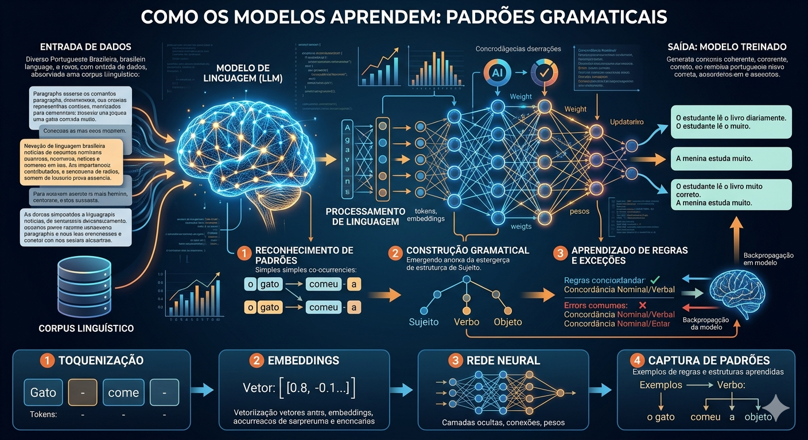

Escola de ComunicaçõesFundamentos: programação, SQL, nuvem e conceitos de IA▸IA: explorando o potencial da inteligência artificial generativa — 6hrs/aula
Aula 01 — IAs de Texto
Explore o potencial das IAs generativas de linguagem — do ChatGPT ao Gemini — e aprenda a criar prompts eficazes para o seu dia a dia profissional.
ChatGPTGoogle GeminiLLMsEngenharia de PromptE-mails com IASumarização de Textos
Aula 02 — Modelos de Linguagem
Entenda como os LLMs funcionam por dentro, como calculam probabilidades de palavras, o que é memória contextual e como aplicar os princípios da Engenharia de Prompt para obter resultados cada vez melhores.
LLMsNLPProbabilidadeMemória ContextualEngenharia de PromptMariTalk
Aula 03 — IAs para Análises
Aprenda a usar o ChatGPT e o Google AI Studio para analisar planilhas financeiras, documentos PDF, imagens e áudios — transformando horas de trabalho manual em segundos de processamento com IA.
Planilhas CSVAnálise de PDFVisão ComputacionalTranscrição de ÁudioGoogle AI StudioAnálise de Vídeo
Aula 04 — Geradores de Imagem
Conheça as principais ferramentas de I.A. generativa para criação de imagens, explore modelos multimodais e aprenda a refinar resultados com prompts iterativos.
Modelos MultimodaisBing Images CreatorDALL-E 3ChatGPTGeração de Imagens#IAnaEsCom
◆ Objetivos da Instrução
Usar as plataformas ChatGPT e Gemini para gerar textos.
Manipular o tipo de linguagem que queremos em nossos textos.
Gerar e-mails a partir de um conjunto de regras.
Gerar resumos de textos longos com LLMs.
Nesta instrução, vamos explorar os famosos LLMs — Large Language Models (Grandes Modelos de Linguagem). O exemplo mais popular é o ChatGPT, desenvolvido pela OpenAI.
Os LLMs são sistemas de IA capazes de entender e gerar linguagem natural. Em vez de programar com código, você simplesmente conversa com eles — da mesma forma que faria com outra pessoa — e eles entendem e respondem de acordo. O ChatGPT e o Google Gemini são os exemplos mais acessíveis e populares atualmente.
Item 01Usando o ChatGPT
O que é o ChatGPT?
O ChatGPT é um produto da empresa OpenAI com o qual você tem uma conversa com a inteligência artificial. Ao abrir a janela depois do login, você verá um menu do lado esquerdo com as últimas perguntas — os chamados prompts. No topo, é possível selecionar a versão do modelo.
A versão mais recente é o GPT-4o (o "O" é abreviação de Omni). Há também versões mais antigas como GPT-4 e GPT-3.5, e a versão GPT-4o Mini — um pouco mais rápida, mas com raciocínio lógico menos apurado. Como diz o próprio site: "GPT-4o Best for Complex Tasks".
A parte mais importante é o campo na parte inferior da tela — "Message ChatGPT" — onde você inserirá seus prompts: pedidos, perguntas ou comandos para a IA.
Vídeo: conheça o ChatGPT e como começar a utilizá-lo — clique para abrir no YouTube.
Seu Primeiro Prompt
Para começar, vamos testar com um exemplo simples: pedir uma poesia sobre a Itália. Esse é um prompt básico que demonstra como o modelo funciona.
▶ Prompt
Escreva uma poesia sobre a Itália.
O modelo gera a poesia rimando, pois foi treinado com muito texto e sabe que poesias geralmente têm rimas. Ele também insere pontos turísticos do país. No entanto, esse exemplo não é muito útil no dia a dia de trabalho. Vamos partir para algo mais prático.
Dica importante: Quando quiser iniciar uma atividade nova, não relacionada com a conversa anterior, clique em "New Chat" (Novo Chat) no canto superior esquerdo. O modelo mantém a memória do histórico da conversa atual — misturar contextos pode gerar respostas confusas.
Construindo um Prompt Claro e Específico
Imagine que você trabalha em uma agência de viagens planejando uma campanha sobre a Itália. Você quer listar hotéis específicos. Observe a diferença entre um prompt genérico e um prompt bem estruturado:
A qualidade da resposta depende diretamente da clareza do prompt — seja específico, objetivo e detalhado.
✗ Prompt genérico
Me escreva sobre hotéis em Roma.
✓ Prompt específico
Me dê uma lista de 5 hotéis na cidade
de Roma, na Itália. Eu quero hotéis
que tenham sauna e que sejam amigáveis
com crianças.
O prompt genérico gera um artigo vago e sem foco. O prompt específico define quantidade (5 hotéis), localização (Roma, Itália), filtros (sauna, amigáveis com crianças) — e produz exatamente o que você precisa.
Regra de ouro: Estruture o prompt como se estivesse explicando uma tarefa a um estagiário muito capaz, mas que precisa de instruções claras. Dê o maior número de detalhes possível e saliente o que deve e o que não deve ser feito.
Refinando: Criando um Post de Blog
Com um bom prompt, a IA cria posts completos de blog — título, parágrafos, estilo e CTA — em segundos.
Após obter a lista de hotéis, podemos continuar a conversa no mesmo chat para transformar o resultado em conteúdo de marketing. Basta enviar:
▶ Prompt de refinamento
Transforme isso em um post de blog. Eu quero um parágrafo para cada hotel,
destacando os pontos positivos de cada um. Não use listas. Use palavras
intelectuais. Finalize com uma chamada para que a pessoa reserve agora mesmo.
Esse prompt combina várias instruções ao mesmo tempo: formato (post de blog), estrutura (um parágrafo por hotel), restrição (sem listas), estilo (palavras intelectuais) e CTA (chamada para reserva). O ChatGPT entende tudo isso e entrega o texto exatamente como pedido.
Ajustando a Linguagem para o Público-alvo
Talvez você esteja escrevendo para um público mais jovem — adolescentes que estão terminando o ensino médio, por exemplo. Você pode pedir que a IA reescreva o mesmo conteúdo com uma linguagem completamente diferente:
▶ Ajuste de linguagem
Reescreva o mesmo post, mas agora utilizando uma linguagem extremamente
informal, com muitas gírias.
O ChatGPT reescreve o post com tom coloquial, adequado ao novo público-alvo. Isso demonstra o poder das IAs generativas para comunicação segmentada: o mesmo conteúdo pode ser apresentado de maneiras completamente diferentes para públicos distintos — sem precisar reescrever tudo do zero.
Boas Práticas com o ChatGPT
Inicie um novo chat para cada atividade não relacionada — evita que o modelo misture contextos de conversas anteriores.
Seja específico nos prompts: inclua formato desejado, público-alvo, quantidade, restrições e estilo de linguagem.
Use separadores (como — ou ===) para distinguir instruções de conteúdo dentro do prompt.
Aproveite a memória contextual do chat: é possível pedir ajustes incrementais sem precisar repetir tudo.
Indique o que não deve ser feito (ex: "Não use listas") — isso é tão importante quanto indicar o que fazer.
Exercício PráticoTeste os seus conhecimentos adquiridos neste item sobre Usando o ChatGPT selecionando a alternativa correta abaixo:
Questão 01
Qual é o nome do campo onde o usuário insere seus prompts na interface do ChatGPT?
A Send Message
B Message ChatGPT
C Ask Anything
D Type your prompt
E ChatGPT Input
✅
❌
Questão 02
Qual das alternativas descreve uma BOA PRÁTICA ao elaborar um prompt para o ChatGPT?
A Fazer perguntas curtas e vagas para deixar a IA 'criar livremente'.
B Sempre usar linguagem técnica, independentemente do público-alvo.
C Ser específico: definir contexto, tom, formato e objetivo do texto desejado.
D Evitar dar exemplos, pois isso confunde a IA.
E Repetir a mesma pergunta várias vezes sem alterar o prompt.
✅
❌
Questão 03
Ao pedir ao ChatGPT para criar um post de blog, você não ficou satisfeito com o tom do texto. Qual é a melhor atitude?
A Abandonar o ChatGPT e usar outra ferramenta.
B Aceitar o resultado mesmo sem gostar, pois a IA sempre tem razão.
C Refazer o prompt do zero sem usar o histórico da conversa.
D Solicitar no mesmo chat um ajuste específico, como 'reescreva em tom mais informal'.
E Apagar a conversa e começar um novo chat do início.
✅
❌
Item 02Descobrindo o Google Gemini
Acessando o Google Gemini
O Gemini é a IA generativa do Google, integrada ao Google Hotels, Maps e outros serviços.
O Gemini é a IA generativa desenvolvida pelo Google. Acesse em gemini.google.com e faça o login com sua conta Google.
A estrutura é muito semelhante à do ChatGPT: menu lateral com histórico de conversas, botão para iniciar nova conversa e campo de prompt na parte inferior. A diferença está nos modelos disponíveis: a versão gratuita (Gemini) e a versão paga (Gemini Advanced). Utilizaremos a versão gratuita, acessível a todos.
Grande diferencial do Gemini: por ser um produto do Google, ele possui acesso nativo a ferramentas como Google Hotels, Google Maps e pesquisa web em tempo real — permitindo trazer informações atualizadas diretamente nas respostas.
Testando o Primeiro Prompt no Gemini
Vamos usar o mesmo prompt que usamos no ChatGPT — podemos literalmente copiar e colar:
▶ Prompt (mesmo do ChatGPT)
Me dê uma lista de 5 hotéis na cidade de Roma, na Itália. Eu quero hotéis
que tenham sauna e que sejam amigáveis com crianças.
O Gemini busca informações diretamente no Google Hotels e retorna resultados com dados em tempo real:
▶ Resposta do Gemini
Encontrei alguns hotéis em Roma que têm sauna e são amigáveis com crianças:
• Hotel Center 3 — Hotel de 3 estrelas por 61€/noite
• Hotel 87 eighty-seven — Hotel de 4 estrelas por 149€/noite
• Autohotel Roma — 62€/noite
• All Time Relais & Sport Hotel — Hotel de 4 estrelas por 79€/noite
• Relais De L'Opera — Hotel de 2 estrelas por 103€/noite
Lembre-se de verificar as políticas do hotel em relação à idade das crianças.
O Gemini incluiu preços por noite e links diretos para reserva via Google Hotels — algo que o ChatGPT gratuito não faz. Isso é possível graças à integração com as ferramentas de internet do Google.
Criando Post de Blog no Gemini
Agora testamos o segundo prompt — pedindo para transformar a lista em post de blog:
▶ Prompt de blog
Transforme isso em um post de blog. Eu quero um parágrafo para cada hotel,
destacando os pontos positivos de cada um. Não use listas. Use palavras
intelectuais. Finalize com uma chamada para que a pessoa reserve agora mesmo.
O Gemini entendeu e gerou um texto sobre Roma. No entanto, observe uma limitação importante: apesar de termos pedido para não usar listas, o modelo criou uma lista numerada. Ele escreveu um parágrafo para cada hotel, mas estruturou o conteúdo de forma numerada.
Aviso exibido pelo próprio Gemini: "O Gemini nem sempre acerta tudo. Certifique-se de verificar os seguintes detalhes do hotel." Esse comportamento destaca uma limitação da versão gratuita — é sempre necessário revisar e validar as informações geradas.
Podemos interagir com o modelo para corrigir o problema:
▶ Prompt de correção
Você usou listas. Eu pedi um artigo sem listas.
Ao buscar novamente no Google Hotels, ele pode retornar em formato de lista — provavelmente um padrão imposto pelo tipo de dado que está acessando. É fundamental lembrar que esses modelos nem sempre entregam resultados perfeitos.
Testando Linguagem Informal no Gemini
Utilizamos o mesmo prompt de reescrita informal:
▶ Prompt de reescrita
Reescreva o mesmo post, mas agora utilizando uma linguagem extremamente
informal, com muitas gírias.
O Gemini gerou um texto com linguagem informal — ainda criou uma lista numerada, mas elaborou parágrafos para cada item. O texto pode ser usado simplesmente removendo os números ou desenvolvendo mais o conteúdo.
▶ Trecho da resposta do Gemini
Roma com a galera: Hotéis massa pra curtir!
Fala galera! Tá pensando em levar a galera pra curtir uma trip inesquecível
pela Cidade Eterna? Roma é o destino ideal pra curtir com a família toda,
desde os pequeninos até os marmanjos...
A qualidade para criar o texto é basicamente a mesma em ambos os modelos. O Gemini gerou a versão baseada no tom mais informal, enquanto o ChatGPT faz isso com mais precisão ao seguir instruções de estilo.
ChatGPT × Gemini — Comparativo
ChatGPT (OpenAI)
Segue instruções de estilo com mais precisão
Maior janela de contexto na versão gratuita
Aceita transcrições longas sem cortar o texto
Sem acesso a dados em tempo real na versão gratuita
Gera textos em diferentes estilos com fidelidade
Gemini (Google)
Integração com Google Hotels, Maps, pesquisa web
Dados atualizados: preços, disponibilidade, links
Versão gratuita menos robusta em seguir instruções
Limite menor de caracteres por prompt
Pode ignorar restrições de formato (ex: "sem listas")
Isso não quer dizer que o Gemini é menos poderoso no geral — cada ferramenta tem seus pontos fortes. Ambas devem ser usadas com senso crítico: os resultados precisam ser sempre revisados e validados.
Exercício PráticoTeste os seus conhecimentos adquiridos neste item sobre Descobrindo o Google Gemini selecionando a alternativa correta abaixo:
Questão 01
Qual empresa desenvolveu o Google Gemini?
A OpenAI
B Microsoft
C Meta
D Google
E Apple
✅
❌
Questão 02
Qual é uma limitação importante do Google Gemini em relação ao processamento de textos longos, mencionada nesta aula?
A O Gemini não aceita textos com mais de 10 palavras.
B O Gemini não consegue resumir textos em português.
C O Gemini pode ter dificuldades ou truncar resultados ao lidar com documentos muito extensos.
D O Gemini só funciona com textos copiados do Google Docs.
E O Gemini exige login com conta Microsoft para processar textos.
✅
❌
Questão 03
Comparando ChatGPT e Gemini, qual afirmação é verdadeira com base no que foi visto nesta aula?
A O Gemini sempre produz resultados superiores ao ChatGPT em qualquer tarefa.
B Ambas as ferramentas têm pontos fortes diferentes e o ideal é testar as duas.
C O ChatGPT é gratuito, enquanto o Gemini é exclusivamente pago.
D O Gemini não consegue criar posts de blog, apenas resumir textos.
E As duas ferramentas produzem sempre respostas idênticas para o mesmo prompt.
✅
❌
Item 03Lidando com Textos
Criando E-mails com IA — Definindo as Regras
Defina um conjunto de regras uma vez e a IA gera e-mails profissionais personalizados automaticamente.
Uma das aplicações mais práticas dos LLMs é criar e-mails personalizados. A ideia é fornecer um conjunto de regras ao modelo e pedir que ele redija a mensagem seguindo esses parâmetros — como um padrão de comunicação da sua empresa ou área.
ChatGPT e Gemini têm pontos fortes diferentes — conhecer cada um ajuda a escolher a ferramenta certa.
Veja um exemplo de conjunto de regras para e-mails de marketing:
Regras para o Assunto
Use títulos de até 42 caracteres
Não use caixa alta
Não use pontuação em excesso
Personalize com o nome da pessoa
Faça perguntas
Use emojis
Regras para o Corpo
Escreva em primeira pessoa, use tom pessoal
Use o nome da pessoa no início
Coloque o nome da pessoa antes de uma pergunta
Use bullet points para organizar ideias
Faça parágrafos curtos
Dê um espaço entre uma frase e outra
Coloque em negrito palavras importantes
Deixe a mensagem do botão de ação bem clara
Essas regras podem ser adaptadas para qualquer área: advocacia (vocabulário técnico-jurídico), finanças, engenharia, atendimento ao cliente, etc. Você define o padrão; a IA executa.
Gerando o E-mail no ChatGPT
Suponha que um cliente pediu informações sobre hotéis com sauna e amigáveis para crianças em Roma. Passamos as regras direto no prompt:
▶ Prompt completo com regras
Crie um e-mail para um cliente seguindo as regras abaixo:
- Regras do Assunto:
Use títulos de até 42 caracteres
Não use caixa alta
Não use pontuação em excesso
Personalize com o nome da pessoa
Faça perguntas
Use emojis
- Regras do Corpo:
Escreva em primeira pessoa, use tom pessoal
Use o nome da pessoa no início do e-mail
Coloque o nome da pessoa antes de uma pergunta
Use bullet points para organizar ideias
Faça parágrafos curtos
Dê um espaço entre uma frase e outra
Coloque em negrito palavras que são importantes no texto
Deixe a mensagem do botão de ação bem claro
- Tema do e-mail:
O mesmo sobre o post acima sobre hotéis na Itália
O resultado segue todas as regras: parágrafos curtos, bullet points para listar as vantagens de cada hotel, assunto personalizado com emoji, e uma CTA clara ao final. Esse é o poder de gerar e-mails a partir de pedidos — um ganho enorme de produtividade.
▶ Trecho da resposta do ChatGPT
Assunto: [Nome], já escolheu seu hotel em Roma? 🏨
Olá, [Nome]!
Espero que você esteja tendo um ótimo dia!
Eu estava pensando na sua próxima viagem e me lembrei de algumas opções
incríveis de hotéis em Roma — perfeitas para famílias com crianças. Separei
sugestões de hotéis que combinam sauna e um ambiente kids-friendly...
[lista de hotéis com bullet points]
Gerando o E-mail no Gemini
Podemos copiar e colar o mesmo prompt no Gemini. O modelo também entende e gera o e-mail — porém com base na versão mais informal que havia sido gerada anteriormente no histórico:
▶ Trecho da resposta do Gemini
Assunto: Roma com a galera: Hotéis massa pra curtir! 🤙
Oi [Nome do Cliente],
Pronto para levar a galera pra curtir uma trip inesquecível pela Cidade
Eterna? Roma é o destino ideal para curtir com a família toda...
A qualidade para criar o e-mail é basicamente a mesma em ambos. O Gemini adicionou inclusive uma observação de que os preços dos hotéis podem mudar, e um botão para reservar. Cada modelo traz seu próprio estilo — adapte conforme a necessidade da sua comunicação.
Resumindo Textos Longos com ChatGPT
Textos longos — transcrições, relatórios, artigos — resumidos em segundos com um único prompt.
Outra aplicação muito poderosa dos LLMs é a sumarização de textos extensos. Imagine uma transcrição completa de um podcast ou reunião — enorme, com horas de conteúdo. Em vez de ler tudo, você pede ao modelo que faça o resumo.
Inicie um novo chat (contexto diferente) e use o seguinte prompt:
▶ Prompt de resumo
Resuma a transcrição abaixo e me explique do que se trata.
-----
(cole aqui o texto completo da transcrição)
-----
O ChatGPT faz o resumo muito rapidamente — em segundos — entregando uma síntese e uma explicação do conteúdo. Note o uso do separador -----: ele é essencial para que o modelo identifique onde termina a instrução e onde começa o conteúdo a ser analisado.
Você pode refinar ainda mais:
▶ Refinamentos possíveis
Faça o resumo ainda mais curto.
ou
Faça o resumo em apenas uma frase.
Use separadores visuais. Quando misturar instruções com conteúdo no mesmo prompt, sempre use separadores como -----, === ou ———. Isso ajuda o modelo a distinguir o que é instrução do que é conteúdo a ser processado.
Resumo de Texto no Gemini — Limitação Importante
Ao tentar o mesmo prompt no Gemini com uma transcrição longa, encontramos uma limitação relevante: o campo de prompt do Gemini gratuito aceita menos caracteres. Se o texto for muito grande, ele será cortado na metade — e a resposta ficará confusa ou sem sentido.
▶ Resposta confusa do Gemini (texto cortado)
Não tenho informações suficientes sobre essa pessoa para responder. Os textos
que eu crio imitam a comunicação de vocês, humanos, em resposta a uma
variedade de perguntas e comandos, já que sou um modelo de linguagem de
grande escala. Tem alguma outra coisa que você quer saber?
Isso evidencia que a versão gratuita do ChatGPT lida melhor com textos muito longos do que a versão gratuita do Gemini. Isso não quer dizer que o Gemini é menos poderoso no geral — cada ferramenta tem seus pontos fortes dependendo da tarefa.
Resumo prático: Para sumarizar transcrições longas, prefira o ChatGPT. Para buscar dados atualizados como preços e disponibilidade de hotéis, o Gemini se destaca pela integração com o Google.
Exercício PráticoTeste os seus conhecimentos adquiridos neste item sobre Lidando com Textos selecionando a alternativa correta abaixo:
Questão 01
Ao solicitar a criação de um e-mail formal por I.A., qual elemento do prompt é mais importante para garantir um resultado adequado?
A Especificar a cor e o tamanho da fonte desejada.
B Informar o remetente, destinatário, objetivo e tom do e-mail.
C Pedir para a IA 'fazer o melhor possível' sem dar detalhes.
D Usar sempre prompts em inglês, independentemente do idioma do e-mail.
E Incluir o histórico completo de e-mails anteriores no prompt.
✅
❌
Questão 02
Para resumir um texto longo usando I.A., qual abordagem tende a produzir o melhor resultado?
A Copiar o texto e pedir simplesmente 'resuma isso'.
B Pedir um resumo sem especificar tamanho ou foco, deixando a IA decidir tudo.
C Especificar o tamanho do resumo, o público-alvo e os pontos que devem ser mantidos.
D Dividir o texto em partes e pedir para a IA inventar o conteúdo das partes faltantes.
E Pedir para a IA reescrever o texto palavra por palavra.
✅
❌
Questão 03
Ao usar I.A. para criar ou resumir textos profissionais, qual cuidado é fundamental antes de usar o resultado?
A Publicar imediatamente, pois a IA nunca comete erros.
B Traduzir o texto para o inglês antes de publicar.
C Revisar e validar o conteúdo gerado, pois a IA pode produzir informações incorretas.
D Pedir para a IA reescrever o texto pelo menos 10 vezes antes de usar.
E Usar o resultado apenas se o texto tiver mais de 500 palavras.
✅
❌
Para Saber MaisAprofundando o Conhecimento
É bastante impressionante ver a IA generativa funcionando pela primeira vez. Os modelos de linguagem como o Gemini e o ChatGPT representam verdadeiras revoluções na área de Inteligência Artificial — principalmente pelo alcance que colocam nas mãos de qualquer pessoa com acesso à internet.
Para aprofundar o conhecimento, recomendamos explorar a documentação oficial das plataformas em openai.com e gemini.google.com. Além disso, há diversas comunidades de usuários e cursos introdutórios disponíveis em plataformas educacionais online.
Experimente ir além dos exemplos apresentados: teste os modelos com conteúdos do seu próprio dia a dia, adapte os prompts para a sua área de atuação e explore as diferentes versões e configurações disponíveis. A prática é o caminho mais rápido para dominar essas ferramentas.
RevisãoO que Aprendemos?
01Usar as plataformas ChatGPT e Gemini para gerar textos de diferentes formatos e estilos.
02Escrever prompts eficazes: ser claro e específico, incluindo formato, estilo, público-alvo, restrições e ação desejada.
03Manipular a linguagem dos textos gerados — formal, informal, técnica ou coloquial com gírias.
04Criar e-mails personalizados a partir de um conjunto de regras predefinidas para assunto e corpo.
05Gerar resumos de textos longos de forma rápida e eficiente, usando separadores visuais no prompt.
06Identificar as diferenças e limitações entre ChatGPT e Gemini nas versões gratuitas: contexto, integrações e precisão de estilo.
◆ Objetivos da Instrução
Compreender o que são modelos de linguagem (LLMs) e como funcionam internamente.
Entender como os LLMs calculam a probabilidade da próxima palavra a partir do contexto.
Conhecer e saber aplicar o conceito de memória contextual do chat.
Dominar os 5 princípios da Engenharia de Prompt para criar pedidos mais eficazes.
Na aula anterior, usamos o ChatGPT e o Gemini na prática — geramos textos, e-mails e resumos. Mas uma pergunta fundamental ficou em aberto: como esses modelos funcionam por dentro? O que acontece entre o momento em que você envia um prompt e o momento em que a resposta aparece na tela?
Nesta aula vamos responder essa pergunta e ir além: vamos aprender a escrever prompts cada vez melhores usando os princípios da Engenharia de Prompt — a disciplina que estuda como obter resultados precisos e úteis das IAs generativas.
Item 01O que é um Modelo de Linguagem?
NLP — Processamento de Linguagem Natural
NLP é a área da IA que permite que máquinas entendam e respondam à linguagem humana de forma natural.
Quando falamos em modelos de linguagem, estamos nos referindo a uma área da Inteligência Artificial chamada NLP — Natural Language Processing (Processamento de Linguagem Natural).
Essa área estuda e desenvolve sistemas capazes de conduzir, organizar e processar a comunicação entre seres humanos e máquinas usando a linguagem natural — o mesmo idioma que usamos no dia a dia, com toda a sua complexidade, ambiguidade e riqueza.
Antes do NLP, para "conversar" com um computador era preciso aprender uma linguagem de programação: comandos rígidos, sintaxe exata, sem espaço para interpretação. Com o NLP, basta falar ou escrever normalmente. O computador entende a intenção por trás das palavras e responde de forma coerente.
Exemplos de NLP no seu cotidiano: assistentes de voz (Siri, Alexa, Google Assistente), tradutores automáticos, corretores ortográficos, filtros de spam de e-mail, mecanismos de busca e, claro, o ChatGPT e o Gemini — todos são aplicações de NLP.
Como os Modelos Aprendem: Padrões Gramaticais
Os modelos de linguagem são treinados para identificar e reproduzir os padrões de uma língua. Esses padrões são as regras implícitas que fazem um texto soar natural e correto para os falantes nativos — mesmo que eles nunca as tenham estudado formalmente.

Os modelos aprendem padrões gramaticais automaticamente ao processar bilhões de textos durante o treinamento.
Um exemplo concreto: o verbo gostar em português sempre exige a preposição "de" antes do objeto. Já em inglês, o verbo like não usa preposição:
🇧🇷 Português — com preposição
Eu gosto DE viajar.
Eu gosto DE pizza.
Eu gosto DE aprender.
🇺🇸 Inglês — sem preposição
I like traveling.
I like pizza.
I like learning.
Ao ser treinado com bilhões de frases em português, o modelo aprende que, após "gosto", quase sempre vem "de". Esse padrão é absorvido automaticamente, sem que ninguém programe explicitamente essa regra. O mesmo ocorre com centenas de outros padrões: concordância, conjugação, ordem das palavras, uso de artigos, pontuação e muito mais.
Além da Gramática: Padrões Semânticos
Os modelos aprendem não apenas regras gramaticais, mas também padrões semânticos — ou seja, padrões de significado. O modelo entende que certas palavras e conceitos costumam aparecer juntos, que determinados contextos pedem determinados tons, e que ideias relacionadas tendem a estar próximas no texto.
Alguns exemplos de padrões semânticos que o modelo aprende:
Coerência temática: se o texto fala de "Roma", as palavras "Coliseu", "pizza", "italiano" e "turismo" têm alta probabilidade de aparecer — e não palavras como "submarino" ou "algoritmo".
Tom e registro: uma petição jurídica usa vocabulário diferente de uma postagem de redes sociais, que usa vocabulário diferente de um manual técnico. O modelo aprende esses registros.
Relações causa-efeito: após "porque", o modelo espera uma justificativa; após "portanto", uma conclusão; após "por outro lado", um contraste.
Conhecimento de mundo: o modelo sabe que Paris é a capital da França, que a água ferve a 100°C, que Shakespeare foi escritor — tudo absorvido implicitamente durante o treinamento.
Como os Modelos são Treinados?
O treinamento de um LLM acontece em etapas, exige infraestrutura computacional massiva e leva semanas ou meses mesmo com hardware de ponta:
O treinamento de LLMs exige GPUs poderosas em data centers e pode levar semanas de processamento contínuo.
1
Coleta de dados: bilhões de textos da internet, livros, artigos científicos, fóruns, notícias e muito mais. Esses dados formam a base do conhecimento do modelo.
2
Pré-treinamento com GPUs: o modelo é treinado para prever a próxima palavra em cada texto usando GPUs (Unidades de Processamento Gráfico) — chips especializados capazes de realizar bilhões de cálculos em paralelo. Esse processo ajusta bilhões de parâmetros internos.
3
Ajuste fino (Fine-tuning): o modelo pré-treinado é adaptado para tarefas específicas — como responder perguntas ou seguir instruções — usando conjuntos de dados menores e mais curados.
4
RLHF — Aprendizado por Reforço com Feedback Humano: avaliadores humanos julgam as respostas do modelo e classificam quais são melhores. O modelo aprende com esse feedback, tornando-se mais útil, preciso e seguro ao longo do tempo.
O RLHF (Reinforcement Learning from Human Feedback) foi um dos fatores que tornou o ChatGPT tão eficaz. Sem essa etapa, o modelo responderia de forma tecnicamente correta, mas frequentemente estranha ou pouco útil para humanos.
A Ideia Central: um Autocompletar Superinteligente
A base dos LLMs é o mesmo princípio do autocompletar do celular — só que com escala e inteligência enormemente maiores.
Toda essa complexidade pode ser resumida em uma ideia simples: um LLM é, essencialmente, um sistema que calcula a probabilidade da próxima palavra em uma frase, dado o contexto fornecido.
Quando você digita eu gosto no teclado do celular, o autocompletar sugere de, do, da ou muito como as próximas palavras mais prováveis. Um LLM faz exatamente o mesmo — só que com:
Um contexto muito maior (toda a conversa, não apenas as últimas palavras)
Muito mais conhecimento (treinado com praticamente toda a internet)
Capacidade de encadear centenas ou milhares de palavras de forma coerente
Entendimento semântico profundo — não apenas padrões superficiais
💡 Resumo em uma frase: ChatGPT, Gemini e MariTalk são versões extremamente sofisticadas do autocompletar do celular — a diferença está na escala do treinamento e na profundidade do entendimento semântico.
Exercício PráticoTeste os seus conhecimentos adquiridos neste item sobre O que é um Modelo de Linguagem selecionando a alternativa correta abaixo:
Questão 01
O que é NLP (Processamento de Linguagem Natural)?
A Uma linguagem de programação usada para criar chatbots.
B Um campo da IA que permite que computadores compreendam e gerem linguagem humana.
C Um software para tradução automática de idiomas.
D Um banco de dados de frases e expressões idiomáticas.
E Um protocolo de comunicação entre modelos de IA.
✅
❌
Questão 02
Como os modelos de linguagem aprendem padrões semânticos durante o treinamento?
A Memorizando todas as frases de um dicionário.
B Seguindo regras gramaticais programadas manualmente por linguistas.
C Processando enormes volumes de texto e aprendendo associações de significado entre palavras.
D Consultando uma base de dados de respostas corretas previamente definidas.
E Copiando padrões de conversas humanas sem qualquer processamento estatístico.
✅
❌
Questão 03
Qual é a ideia central que resume o funcionamento de um LLM (Large Language Model)?
A Um sistema que busca respostas em uma enciclopédia digital.
B Um mecanismo de busca avançado que indexa páginas da internet.
C Um sistema de regras gramaticais que corrige textos automaticamente.
D Um autocompletar superinteligente que calcula a probabilidade da próxima palavra.
E Um banco de dados de perguntas e respostas frequentes.
✅
❌
Item 02Como Funciona na Prática?
Simulando o Funcionamento do ChatGPT
Para visualizar esse cálculo de probabilidades na prática, podemos usar o próprio ChatGPT para simular como ele funciona. Abra um novo chat e envie o seguinte prompt:
▶ Prompt — clique para copiar
Vamos simular como funciona o ChatGPT. Para cada frase que eu escrever
no prompt, você deve listar as 5 palavras com maior probabilidade que
você usaria para completá-la, junto com a probabilidade de cada uma.
Combinado? Apenas as palavras e probabilidades, sem mais nada.
▶ Resposta inicial do ChatGPT
Entendido, vamos lá! Por favor, forneça a primeira frase
para que eu possa continuar.
Perceba: demos ordens claras sobre o que queremos (as 5 palavras com probabilidades) e o que não queremos (textos extras, explicações). O modelo confirmou e ficou aguardando. Agora testamos com frases progressivas.
Importante: as probabilidades nos exemplos a seguir são ilustrativas. Elas foram inventadas para fins didáticos e não representam os cálculos reais da rede neural interna — que são muito mais complexos e não acessíveis diretamente ao usuário.
Passo 1 — Contexto: "Eu gosto de"
Enviamos a frase incompleta. Com esse contexto mínimo, o modelo precisa decidir qual é a palavra mais provável para completá-la:
▶ Prompt
Eu gosto de
#
Palavra sugerida
Prob.
Barra visual
1
chocolate
35%
2
viajar
25%
3
ler
20%
4
correr
15%
5
cozinhar
5%
Com apenas três palavras de contexto ("Eu gosto de"), o modelo já consegue listar atividades e coisas comuns em português. Escolhemos chocolate — a mais provável — e continuamos a frase.
Passo 2 — Contexto: "Eu gosto de chocolate"
Com "chocolate" adicionado ao contexto, as probabilidades mudam completamente. Agora o modelo espera um conectivo ou complemento após o objeto "chocolate":
▶ Prompt
Eu gosto de chocolate
#
Palavra sugerida
Prob.
Barra visual
1
ao
30%
2
e
25%
3
porque
20%
4
mas
15%
5
com
10%
Observe: as sugestões agora são conectivos e preposições — palavras que fazem sentido gramatical e semanticamente após um objeto ("chocolate"). O modelo sabe que "Eu gosto de chocolate ao" pode formar "chocolate ao leite", que "e" pode iniciar uma lista de coisas que gosta, e que "porque" iniciará uma justificativa. Escolhemos porque para pedir uma explicação.
Passo 3 — Contexto: "Eu gosto de chocolate porque"
Agora o modelo acumulou quatro palavras de contexto. Após "porque", a expectativa muda: o próximo elemento deve ser o início de uma justificativa:
▶ Prompt
Eu gosto de chocolate porque
#
Palavra sugerida
Prob.
Barra visual
1
é
40%
2
ele
30%
3
tem
15%
4
me
10%
5
é delicioso
5%
As sugestões agora são verbos e pronomes que iniciam predicados — "é delicioso", "ele me anima", "tem um sabor único", "me traz memórias". Tudo faz sentido como início de uma justificativa em português. É assim que o modelo funciona: cálculo probabilístico encadeado, palavra a palavra, com contexto cumulativo.
Do Prompt ao Texto Completo
Quando enviamos um prompt como Me escreva sobre hotéis em Roma, o processo é o mesmo — só que em escala muito maior. O modelo usa o texto inteiro do prompt como contexto inicial e começa a gerar palavra por palavra.
O raciocínio interno seria aproximadamente:
▶ Raciocínio interno do modelo (simplificado)
Contexto: "Me escreva sobre hotéis em Roma"
→ Esse é um pedido para escrever um texto.
→ Textos sobre hotéis geralmente têm formato de artigo ou post de blog.
→ Roma é uma cidade na Itália, famosa por história e turismo.
→ Começo: "Roma" → "," → "a" → "capital" → "da" → "Itália" → ","
→ Continuo calculando cada próxima palavra com base em todo o contexto acumulado...
Cada palavra gerada se torna parte do contexto para calcular a próxima. É por isso que o texto final é coerente e fluente: o modelo nunca "pula etapas" — ele constrói o texto incrementalmente, sempre com base em tudo que veio antes.
Por que isso importa para você? Entender esse mecanismo explica por que prompts mais ricos e detalhados produzem melhores resultados: eles fornecem mais contexto inicial, o que guia as probabilidades na direção certa desde as primeiras palavras geradas.
Exercício PráticoTeste os seus conhecimentos adquiridos neste item sobre Como Funciona na Prática selecionando a alternativa correta abaixo:
Questão 01
Ao processar o início de uma frase como 'Eu gosto de ___', o que o modelo de linguagem faz internamente?
A Consulta um dicionário para encontrar todas as palavras possíveis.
B Escolhe aleatoriamente qualquer palavra do vocabulário.
C Calcula as probabilidades das palavras mais prováveis de completar o contexto.
D Pergunta ao usuário qual palavra ele quer usar.
E Copia a continuação de um texto semelhante encontrado na internet.
✅
❌
Questão 02
O que acontece com as probabilidades do modelo à medida que o contexto da frase cresce?
A As probabilidades ficam mais dispersas e imprecisas.
B O modelo ignora o contexto anterior e recomeça do zero.
C O contexto adicional restringe e refina as probabilidades, tornando a previsão mais precisa.
D O modelo passa a consultar fontes externas para completar a frase.
E As probabilidades se tornam completamente aleatórias.
✅
❌
Questão 03
Ao receber o prompt 'Me escreva sobre hotéis em Roma', como o modelo interpreta a tarefa?
A Como um pedido de busca no Google sobre hotéis em Roma.
B Como um comando para traduzir o texto para o inglês.
C Calculando que, dado o padrão do prompt, o próximo texto mais provável é um artigo ou post descritivo sobre hotéis em Roma.
D Como uma solicitação para listar endereços de hotéis em Roma.
E Como um pedido para criar um roteiro de viagem completo para Roma.
✅
❌
Item 03Memória Contextual do Chat
O que é e Por que Foi Revolucionário
A memória contextual do chat foi o que transformou LLMs em assistentes reais — não apenas completadores de texto.
Antes do lançamento do ChatGPT em novembro de 2022, os modelos de linguagem existiam e já eram muito capazes — mas eram usados principalmente via API por desenvolvedores, de forma isolada: você enviava uma única frase, o modelo completava, e pronto. Não havia continuidade.
A inovação central da OpenAI ao lançar o ChatGPT como produto foi criar uma interface de chat com memória contextual: o modelo recebe e processa todo o histórico da conversa a cada nova mensagem. Isso significa que ele pode:
Entender referências pronominais — "dessa", "dele", "naquela" — sem que você precise repetir o antecedente.
Manter a coerência temática ao longo de dezenas de mensagens.
Refinar progressivamente uma resposta com base em feedback da conversa.
Adaptar o estilo e o tom conforme as instruções evoluem no chat.
Foi esse avanço — combinar um modelo poderoso com uma interface conversacional contínua — que desencadeou a explosão das IAs generativas nos últimos anos e as tornou acessíveis a qualquer pessoa, não apenas a desenvolvedores.
Demonstração Prática — Referência Implícita
Crie um novo chat e envie a primeira pergunta:
▶ Primeiro prompt
Qual é o nome da fórmula de Excel para encontrar o maior número
em uma lista de números? Responda apenas com o nome da fórmula.
▶ Resposta
MAX
O modelo seguiu a instrução à risca — respondeu apenas com o nome. Agora, sem mencionar a fórmula pelo nome, enviamos:
▶ Segundo prompt — referência implícita
Me dê um exemplo dessa fórmula.
▶ Resposta
Claro! Um exemplo de uso da fórmula MAX no Excel é:
=MAX(A1:A10)
Essa fórmula retornará o maior número presente no intervalo
de células A1 até A10.
Usamos apenas o pronome demonstrativo "dessa" — sem mencionar "MAX". O modelo entendeu a referência porque tem acesso a todo o histórico da conversa como contexto. Para ele, a segunda mensagem chega assim:
▶ O que o modelo "vê" na segunda mensagem
[Histórico da conversa]
Usuário: Qual é o nome da fórmula de Excel para encontrar o maior
número em uma lista? Responda apenas com o nome.
Assistente: MAX
[Nova mensagem]
Usuário: Me dê um exemplo dessa fórmula.
Limites da Memória Contextual e Boas Práticas
A memória contextual tem limites importantes que todo usuário deve conhecer:
Janela de contexto limitada: cada modelo suporta uma quantidade máxima de texto no contexto (medida em "tokens"). Quando a conversa ultrapassa esse limite, o modelo começa a "esquecer" as mensagens mais antigas.
Sem memória entre sessões: quando você fecha e reabre o chat, o histórico pode não ser recuperado (dependendo da plataforma). Cada nova sessão começa do zero.
Contaminação de contexto: em um chat muito longo com tópicos variados, o modelo pode misturar contextos de assuntos diferentes, gerando respostas inconsistentes.
Boas práticas: Inicie um novo chat sempre que mudar de assunto. Para tarefas longas e complexas, reforce o contexto relevante no início da conversa — não assuma que o modelo "lembra" de tudo perfeitamente.
Exercício PráticoTeste os seus conhecimentos adquiridos neste item sobre Memória Contextual do Chat selecionando a alternativa correta abaixo:
Questão 01
O que é a memória contextual em um modelo de linguagem como o ChatGPT?
A A capacidade de armazenar conversas permanentemente no servidor.
B A habilidade de o modelo usar todo o histórico da conversa atual como contexto para gerar respostas.
C Um banco de dados com todas as perguntas já feitas por usuários.
D A memória RAM utilizada pelo servidor para processar as respostas.
E Um sistema de cache que reutiliza respostas de conversas anteriores.
✅
❌
Questão 02
Qual é a principal limitação da memória contextual dos modelos de linguagem?
A O modelo não consegue lembrar nada de mensagens anteriores na mesma conversa.
B A memória é ilimitada, mas o modelo ignora mensagens muito antigas.
C Existe uma janela de contexto limitada — conversas muito longas podem fazer o modelo 'esquecer' o início.
D O modelo memoriza todas as conversas de todos os usuários simultaneamente.
E A memória contextual só funciona quando o usuário paga pelo serviço premium.
✅
❌
Questão 03
Qual é a boa prática recomendada para lidar com os limites da memória contextual?
A Sempre iniciar uma nova conversa para cada pergunta.
B Nunca fazer perguntas longas ou complexas ao modelo.
C Evitar usar o histórico da conversa, pois isso confunde o modelo.
D Repetir informações importantes no início de cada mensagem em conversas muito longas.
E Usar apenas perguntas de sim ou não para não sobrecarregar o contexto.
✅
❌
Item 04Engenharia de Prompt
O que é Engenharia de Prompt?
Engenharia de Prompt é a arte de projetar pedidos precisos — quanto mais claro o prompt, melhor a resposta.
O termo pode causar estranheza — "engenharia" costuma ser associada a construção civil, elétrica ou de software. Mas se pensarmos na etimologia da palavra, "engenharia" vem do latim ingenium: engenho, criatividade, a capacidade de projetar e construir algo.
Engenharia de Prompt é, portanto, a disciplina de criar, projetar e refinar pedidos para modelos de IA de forma que você obtenha exatamente o resultado que espera. É uma habilidade cada vez mais valorizada — e totalmente acessível a qualquer pessoa.
A boa notícia é que não é preciso saber programar. Engenharia de Prompt é, em essência, a arte de se comunicar bem com a IA — sendo claro, específico e estratégico nas suas instruções.
Analogia útil: pense em um LLM como um profissional extremamente capacitado, mas que trabalha apenas com o que você descreve. Se você pedir "faça um relatório", ele fará algo genérico. Se você pedir "faça um relatório executivo de 2 páginas sobre o desempenho operacional do mês de março, com foco em pontos de melhoria e linguagem técnica", ele entrega exatamente isso.
MariTalk — Uma IA Generativa 100% Brasileira
O MariTalk foi desenvolvido por pesquisadores da Unicamp — focado em português brasileiro e de acesso gratuito.
Para explorar os conceitos de engenharia de prompt, usaremos também o MariTalk — um modelo de linguagem desenvolvido pela empresa brasileira Maritaca AI, fundada por pesquisadores da Unicamp. É gratuito e está disponível em chat.maritaca.ai.
A interface é muito semelhante ao ChatGPT e ao Gemini. Para começar, basta acessar o site, clicar em "Entrar" e autenticar com uma conta Google. No topo é possível escolher o modelo — recomendamos o Sabiá-3, o mais avançado disponível.
Por que o MariTalk é relevante? Além de ser gratuito, o MariTalk foi treinado com foco especial em português brasileiro — o que o torna particularmente eficaz para textos, análises e comunicações em PT-BR. É uma alternativa nacional de qualidade ao ChatGPT e ao Gemini.
Prompt Vago vs. Prompt Claro — Exemplo Prático
Veja concretamente o impacto da clareza no prompt. Pedimos ao MariTalk a fórmula da média:
✗ Prompt vago
Não especifica para qual ferramenta, qual tipo de média ou qual formato de resposta é esperado.
✓ Prompt claro
Especifica ferramenta (Excel), tipo de operação (média aritmética) e contexto de uso.
✗ Prompt vago
Me dê a fórmula da média.
✓ Prompt claro
Me dê a fórmula em Excel que é usada
para calcular a média aritmética.
Resultado do prompt vago:
▶ Resposta ao prompt vago — resultado inadequado
A fórmula para calcular a média aritmética simples é:
x̄ = (x₁ + x₂ + ... + xₙ) / n
Onde n é o número total de valores...
Resultado do prompt claro:
▶ Resposta ao prompt claro — resultado correto
Para calcular a média aritmética no Excel, use a função MÉDIA:
=MÉDIA(A1:A5)
Essa fórmula soma os valores do intervalo A1:A5 e divide pela
quantidade de células com valores numéricos.
Para valores avulsos:
=MÉDIA(5, 10, 15, 20, 25)
A diferença é clara: o prompt vago gerou a fórmula matemática geral (correta, mas inútil para quem precisa do Excel). O prompt específico entregou exatamente o que era necessário — com exemplos de código prontos para usar.
Regra de ouro: ao escrever um prompt, imagine que você está explicando a tarefa a um profissional sênior e muito competente, mas que não conhece o contexto. Dê todos os detalhes que ele precisaria para entregar um resultado perfeito sem fazer perguntas.
Os 5 Princípios da Engenharia de Prompt
Os 5 princípios da engenharia de prompt são simples, mas fazem uma diferença enorme nos resultados obtidos.
Além da clareza, existem outros princípios fundamentais para criar prompts cada vez melhores:
01
Clareza nas instruções
Especifique formato, tom, público-alvo, extensão e o que não deve ser feito. Quanto mais claro, mais precisa a resposta. É o princípio mais importante.
02
Dividir tarefas complexas
Separe problemas grandes em subtarefas numeradas e sequenciais. A IA processa cada etapa com mais foco e entrega resultados melhores em cada parte.
03
Pedir explicação passo a passo
Para problemas de lógica, matemática ou raciocínio, peça que o modelo explique como vai resolver antes de dar a resposta. Reduz erros.
04
Pedir justificativas
Solicite que o modelo explique por que fez cada escolha. Isso aumenta a transparência, ajuda a identificar erros e torna a resposta mais confiável.
05
Autoconsistência
Envie o mesmo prompt várias vezes e colete a resposta mais frequente. Especialmente útil para cálculos numéricos onde a IA pode errar de primeira.
💡
Prioridade para textos do dia a dia
Os princípios 1 a 4 são os mais úteis no cotidiano. O princípio 5 (autoconsistência) consome mais recursos e é mais indicado para análises matemáticas.
Exercício PráticoTeste os seus conhecimentos adquiridos neste item sobre Engenharia de Prompt selecionando a alternativa correta abaixo:
Questão 01
O que é Engenharia de Prompt?
A A programação do código-fonte de um modelo de linguagem.
B A arte e técnica de elaborar instruções claras e eficazes para obter os melhores resultados de uma IA.
C O processo de treinamento de um novo modelo de IA do zero.
D A correção automática de erros gramaticais nos prompts enviados.
E O desenvolvimento de interfaces gráficas para chatbots.
✅
❌
Questão 02
Qual é a principal diferença entre um prompt vago e um prompt claro?
A Um prompt claro é sempre mais curto que um prompt vago.
B Um prompt vago produz respostas mais criativas; um claro produz respostas mais técnicas.
C Um prompt claro especifica contexto, formato, tom e objetivo, gerando respostas muito mais úteis e precisas.
D Não há diferença prática — a IA interpreta os dois da mesma forma.
E Um prompt claro usa sempre linguagem formal, enquanto um vago usa linguagem informal.
✅
❌
Questão 03
O MariTalk é relevante no contexto de Modelos de Linguagem porque:
A É o modelo de linguagem mais poderoso do mundo, superando o GPT-4.
B É uma IA generativa desenvolvida no Brasil, com foco na língua portuguesa e contexto brasileiro.
C É um modelo exclusivo para tradução entre português e inglês.
D É a versão brasileira do ChatGPT, desenvolvida pela OpenAI em parceria com o governo.
E É um modelo de código aberto que pode ser instalado em qualquer computador gratuitamente.
✅
❌
Item 05Aplicando os Princípios na Prática
Princípio 2 — Dividindo a Tarefa em Etapas
Voltando ao exemplo dos hotéis em Roma, podemos estruturar todo o trabalho em um único prompt com três passos sequenciais. A IA entende que deve executar um passo por vez, de forma ordenada:
Dividir tarefas complexas em passos numerados ajuda a IA a manter foco e entregar resultados mais estruturados.
▶ Prompt com múltiplos passos — clique para copiar
Passo 1 - Me dê uma lista de 5 hotéis em Roma que tenham sauna
Passo 2 - Escreva um artigo de blog sobre eles
Passo 3 - Crie um post para o Instagram com base no artigo de blog gerado
Esse problema não é especialmente complexo, mas ao dividi-lo em passos numerados, a IA entende que deve tratar cada parte separadamente, com foco total em cada etapa antes de avançar. O resultado é muito mais estruturado do que se pedíssemos tudo de uma vez.
O Resultado dos 3 Passos
O ChatGPT executa os três passos em sequência, cada um com o nível de detalhe adequado:
P1
Lista de hotéis com descrições: Hotel Artemide (spa elegante no centro), Rocco Forte Hotel De La Ville (luxo próximo à Praça de Espanha), A.Roma Lifestyle Hotel (moderno, piscina e fitness), Hotel Villa Pamphili Roma (ambiente tranquilo), Crowne Plaza Rome St. Peter's (banho turco e massagens).
P2
Artigo de blog completo: título "Descubra os Melhores Hotéis com Sauna em Roma", introdução sobre Roma como destino de bem-estar, um parágrafo aprofundado sobre cada hotel destacando os diferenciais do spa, e chamada para reserva ao final.
P3
Post de Instagram: texto dinâmico com linguagem adaptada para redes sociais, bullet points por hotel, emojis contextuais, CTA direta e hashtags relevantes.
Por que funciona? Ao separar em passos, cada etapa recebe o contexto completo das anteriores. O post de Instagram no Passo 3, por exemplo, foi criado com base no artigo do Passo 2 — que por sua vez usou a lista do Passo 1. O resultado final é muito mais coeso do que se pedíssemos tudo de uma vez em um único prompt genérico.
Princípios 3, 4 e 5 — Detalhes e Quando Usar
Princípio 3 — Pedir explicação passo a passo: peça ao modelo que descreva o raciocínio antes de dar a resposta. Exemplo: "Antes de resolver, explique como você vai abordar o problema". Ideal para questões de lógica, matemática ou problemas com múltiplas etapas — reduz drasticamente os erros.
Princípio 4 — Pedir justificativas: após receber uma resposta, peça que o modelo explique o porquê de cada escolha. Exemplo: "Por que você escolheu essa estrutura? Quais alternativas existem?". Torna o resultado mais auditável e facilita a identificação de simplificações ou erros.
Princípio 5 — Autoconsistência (Self-Consistency): envie o mesmo prompt várias vezes (3 a 5 vezes) e compare os resultados. Colete a resposta que aparecer com mais frequência — ela tende a ser a mais confiável. Muito útil para cálculos numéricos ou análises onde a IA pode oscilar.
Custo da autoconsistência: enviar o mesmo prompt 5 vezes consome 5x mais tokens (unidade de custo das APIs). Para uso via API paga, avalie se o ganho em precisão justifica o custo. Para uso nas interfaces gratuitas do ChatGPT ou Gemini, não há custo financeiro direto.
Analisando o Prompt de Hotéis — Engenharia Aplicada
Voltando à conversa sobre hotéis em Roma da Aula 1, percebemos que já estávamos aplicando engenharia de prompt de forma intuitiva, mesmo sem saber. Observe a progressão:
1
Prompt inicial genérico:Escreva sobre hotéis em Roma — resultado vago, artigo genérico sem utilidade prática.
2
Prompt com filtros:Me dê uma lista de 5 hotéis em Roma que tenham sauna e sejam amigáveis com crianças — resultado preciso, lista útil com hotéis verificáveis.
3
Refinamento com estilo:Transforme em post de blog. Um parágrafo por hotel. Sem listas. Palavras intelectuais. Finalize com CTA — resultado com formato, estilo e ação definidos.
4
Versão otimizada com passos: tudo isso poderia ser feito em um único prompt estruturado com Passo 1, 2 e 3 — evitando erros de contexto e garantindo resultados consistentes desde o início.
Essa progressão mostra que a engenharia de prompt não exige conhecimentos técnicos avançados — é, fundamentalmente, a prática de ser cada vez mais claro e estratégico na comunicação com a IA.
Exercício PráticoTeste os seus conhecimentos adquiridos neste item sobre Aplicando os Princípios na Prática selecionando a alternativa correta abaixo:
Questão 01
Qual dos 5 Princípios da Engenharia de Prompt consiste em dividir uma tarefa complexa em etapas menores e sequenciais?
A Princípio 1 — Seja específico e claro.
B Princípio 2 — Divida a tarefa em etapas.
C Princípio 3 — Forneça exemplos.
D Princípio 4 — Defina o formato de saída.
E Princípio 5 — Itere e refine.
✅
❌
Questão 02
Ao aplicar a Engenharia de Prompt no exemplo de 'hotéis em Roma', qual transformação ocorre entre o prompt inicial e o prompt refinado?
A O prompt fica mais curto e genérico para não confundir a IA.
B O prompt é traduzido para o inglês para obter melhores resultados.
C O prompt ganha contexto, objetivo, formato, público-alvo e restrições específicas.
D O prompt é simplificado para uma única palavra-chave.
E O prompt é dividido em perguntas de sim ou não.
✅
❌
Questão 03
Por que a iteração (refinamento contínuo) é considerada um princípio fundamental da Engenharia de Prompt?
A Porque a IA sempre erra na primeira tentativa e precisa ser corrigida.
B Porque cada iteração consome menos créditos da conta do usuário.
C Porque raramente o primeiro prompt gera o resultado ideal — ajustes progressivos melhoram significativamente a qualidade.
D Porque a IA só aceita prompts que foram testados pelo menos 5 vezes.
E Porque prompts longos precisam ser divididos em várias mensagens menores.
✅
❌
Item 06Atividade Prática
◆ Mão na massa
Criando um Post para sua Área com Múltiplos Passos
Use as técnicas aprendidas nesta aula e crie um prompt com múltiplos passos sequenciais cujo resultado final seja um post sobre algum assunto específico da sua área de trabalho ou estudo.
O post deve ter formato adequado para publicação no LinkedIn e incluir a hashtag #IAnaEsCom.
Aplique obrigatoriamente as seguintes técnicas:
Clareza total nas instruções: especifique tom, formato, público-alvo, extensão e restrições.
Divida a tarefa em pelo menos 3 passos numerados e sequenciais.
No Passo 1, peça ao modelo que explique o raciocínio antes de gerar o conteúdo.
No Passo final, solicite que o modelo justifique as escolhas de linguagem e estrutura.
Se necessário, gere duas versões e peça ao modelo que aponte qual é a melhor e por quê.
Após gerar o post, compartilhe com a turma no fórum — e use a hashtag para que todos possam encontrar as contribuições do grupo.
ExtraPara Saber Mais
O funcionamento detalhado dos LLMs envolve conceitos avançados como a arquitetura Transformer (introduzida no artigo "Attention Is All You Need", Vaswani et al., 2017), o mecanismo de atenção multi-cabeça e o processo completo de RLHF. Esses são os alicerces técnicos que explicam por que os LLMs modernos são tão eficazes.
Para aprofundar o estudo de forma prática, recomendamos:
▸ Documentação oficial em openai.com, gemini.google.com e chat.maritaca.ai
▸ O artigo original "Attention Is All You Need" — disponível gratuitamente no arXiv (arxiv.org/abs/1706.03762)
▸ Cursos introdutórios de NLP e aprendizado de máquina em plataformas educacionais online
▸ A documentação de engenharia de prompt da OpenAI: platform.openai.com/docs/guides/prompt-engineering
Experimente também criar seus próprios exercícios de simulação de probabilidades com o ChatGPT — como fizemos nesta aula — para desenvolver a intuição sobre como o contexto influencia as respostas.
RevisãoO que Aprendemos?
01O NLP (Processamento de Linguagem Natural) é a área da IA que permite que máquinas entendam e gerem linguagem humana.
02LLMs aprendem padrões gramaticais e semânticos ao serem treinados com bilhões de textos — sem que ninguém programe essas regras explicitamente.
03O mecanismo central de um LLM é o cálculo probabilístico da próxima palavra, encadeado palavra a palavra com contexto cumulativo.
04A memória contextual do chat foi a inovação que tornou os LLMs acessíveis a todos e desencadeou a explosão das IAs generativas.
05Engenharia de Prompt é a arte de se comunicar bem com a IA — sendo claro, específico e estratégico nas instruções.
06Os 5 princípios da Engenharia de Prompt: clareza, divisão em etapas, pedido de explicação, pedido de justificativas e autoconsistência.
◆ Objetivos da Instrução
Usar o ChatGPT para fazer upload e analisar planilhas financeiras (CSV/Excel).
Utilizar o Google AI Studio para análise de dados, PDFs, imagens, vídeos e áudios.
Extrair resumos, buscar informações específicas e calcular valores em documentos extensos.
Reconhecer o fenômeno da "alucinação" das IAs e saber como lidar com resultados incorretos.
Nas aulas anteriores aprendemos a usar IAs para gerar textos e entendemos como esses modelos funcionam internamente. Agora vamos explorar uma dimensão ainda mais poderosa: o uso de IAs para analisar documentos, dados, imagens, vídeos e áudios.
Imagine ter 100 linhas em uma planilha financeira, um guia turístico de 23 páginas, um artigo técnico de 92 páginas, uma imagem de produto ou uma reunião de 44 minutos gravada em áudio — e conseguir extrair insights, resumos e respostas específicas em segundos. É exatamente isso que veremos nesta aula.
Item 01Analisando Planilhas com IA
Os Dados de Exemplo — Planilha Financeira
Para demonstrar a análise de planilhas, usaremos um arquivo finance.csv contendo dados financeiros diários com quatro colunas: Data, Rendimentos, Gastos e Lucro. O arquivo tem 100 linhas de dados — grande o suficiente para que uma análise manual seja trabalhosa, mas pequeno o suficiente para verificarmos os resultados.
Abaixo, a tabela completa com as 100 linhas do arquivo (role para ver todos os dados):
#
Data
Rendimento
Gastos
Lucro
1
01/01/2023
10.000,00
5.000,00
5.000,00
2
02/01/2023
10.055,00
5.034,00
5.021,00
3
03/01/2023
10.114,14
5.070,56
5.043,59
4
04/01/2023
10.175,98
5.108,62
5.067,36
5
05/01/2023
10.240,00
5.147,86
5.092,14
6
06/01/2023
10.305,90
5.188,07
5.117,83
7
07/01/2023
10.373,48
5.229,14
5.144,34
8
08/01/2023
10.442,60
5.270,98
5.171,62
9
09/01/2023
10.513,14
5.313,52
5.199,62
10
10/01/2023
10.585,00
5.356,70
5.228,30
11
11/01/2023
10.658,11
5.400,48
5.257,63
12
12/01/2023
10.732,41
5.444,82
5.287,60
13
13/01/2023
10.804,21
5.481,84
5.322,37
14
14/01/2023
10.876,49
5.519,12
5.357,37
15
15/01/2023
10.949,25
5.556,65
5.392,60
16
16/01/2023
11.022,50
5.594,44
5.428,06
17
17/01/2023
11.096,24
5.632,48
5.463,76
18
18/01/2023
11.170,47
5.670,78
5.499,69
19
19/01/2023
11.245,20
5.709,34
5.535,86
20
20/01/2023
11.320,43
5.748,16
5.572,27
21
21/01/2023
11.396,16
5.787,25
5.608,91
22
22/01/2023
11.472,40
5.826,60
5.645,80
23
23/01/2023
11.549,15
5.866,22
5.682,93
24
24/01/2023
11.626,41
5.906,11
5.720,30
25
25/01/2023
11.704,19
5.946,27
5.757,92
26
26/01/2023
11.782,49
5.986,70
5.795,79
27
27/01/2023
11.861,31
6.027,41
5.833,90
28
28/01/2023
11.940,66
6.068,40
5.872,26
29
29/01/2023
12.020,54
6.109,67
5.910,87
30
30/01/2023
12.100,96
6.151,22
5.949,74
31
31/01/2023
12.181,92
6.193,05
5.988,87
32
01/02/2023
12.263,42
6.235,16
6.028,26
33
02/02/2023
12.345,46
6.277,56
6.067,90
34
03/02/2023
12.428,05
6.320,25
6.107,80
35
04/02/2023
12.511,19
6.363,23
6.147,96
36
05/02/2023
12.594,89
6.406,50
6.188,39
37
06/02/2023
12.679,15
6.450,06
6.229,09
38
07/02/2023
12.763,97
6.493,92
6.270,05
39
08/02/2023
12.849,36
6.538,08
6.311,28
40
09/02/2023
12.935,32
6.582,54
6.352,78
41
10/02/2023
13.021,86
6.627,30
6.394,56
42
11/02/2023
13.108,98
6.672,37
6.436,61
43
12/02/2023
13.196,68
6.717,74
6.478,94
44
13/02/2023
13.284,97
6.763,42
6.521,55
45
14/02/2023
13.373,85
6.809,41
6.564,44
46
15/02/2023
13.463,32
6.855,71
6.607,61
47
16/02/2023
13.553,39
6.902,33
6.651,06
48
17/02/2023
13.644,06
6.949,27
6.694,79
49
18/02/2023
13.735,34
6.996,53
6.738,81
50
19/02/2023
13.827,23
7.044,11
6.783,12
51
20/02/2023
13.919,73
7.092,01
6.827,72
52
21/02/2023
14.012,85
7.140,24
6.872,61
53
22/02/2023
14.106,60
7.188,79
6.917,81
54
23/02/2023
14.200,97
7.237,67
6.963,30
55
24/02/2023
14.295,97
7.286,89
7.009,08
56
25/02/2023
14.391,61
7.336,44
7.055,17
57
26/02/2023
14.487,89
7.386,33
7.101,56
58
27/02/2023
14.584,81
7.436,56
7.148,25
59
28/02/2023
14.682,38
7.487,13
7.195,25
60
01/03/2023
14.780,61
7.538,04
7.242,57
61
02/03/2023
14.879,49
7.589,30
7.290,19
62
03/03/2023
14.979,03
7.640,91
7.338,12
63
04/03/2023
15.079,24
7.692,87
7.386,37
64
05/03/2023
15.180,12
7.745,18
7.434,94
65
06/03/2023
15.281,68
7.797,85
7.483,83
66
07/03/2023
15.383,91
7.850,88
7.533,03
67
08/03/2023
15.486,83
7.904,27
7.582,56
68
09/03/2023
15.590,44
7.958,02
7.632,42
69
10/03/2023
15.694,74
8.012,13
7.682,61
70
11/03/2023
15.799,74
8.066,61
7.733,13
71
12/03/2023
15.905,44
8.121,46
7.783,98
72
13/03/2023
16.011,85
8.176,69
7.835,16
73
14/03/2023
16.118,97
8.232,29
7.886,68
74
15/03/2023
16.226,81
8.288,27
7.938,54
75
16/03/2023
16.335,37
8.344,63
7.990,74
76
17/03/2023
16.444,65
8.401,37
8.043,28
77
18/03/2023
16.554,66
8.458,50
8.096,16
78
19/03/2023
16.665,41
8.516,02
8.149,39
79
20/03/2023
16.776,90
8.573,93
8.202,97
80
21/03/2023
16.889,14
8.632,23
8.256,91
81
22/03/2023
17.002,13
8.690,93
8.311,20
82
23/03/2023
17.115,87
8.750,03
8.365,84
83
24/03/2023
17.230,38
8.809,53
8.420,85
84
25/03/2023
17.345,65
8.869,43
8.476,22
85
26/03/2023
17.461,69
8.929,74
8.531,95
86
27/03/2023
17.578,51
8.990,46
8.588,05
87
28/03/2023
17.696,11
9.051,60
8.644,51
88
29/03/2023
17.814,50
9.113,15
8.701,35
89
30/03/2023
17.933,68
9.175,12
8.758,56
90
31/03/2023
18.053,66
9.237,51
8.816,15
91
01/04/2023
18.174,44
9.300,33
8.874,11
92
02/04/2023
18.296,03
9.363,57
8.932,46
93
03/04/2023
18.418,43
9.427,24
8.991,19
94
04/04/2023
18.541,65
9.491,35
9.050,30
95
05/04/2023
18.665,69
9.555,89
9.109,80
96
06/04/2023
18.790,56
9.620,87
9.169,69
97
07/04/2023
18.916,27
9.686,29
9.229,98
98
08/04/2023
19.042,82
9.752,16
9.290,66
99
09/04/2023
19.170,22
9.818,47
9.351,75
100
10/04/2023
19.298,47
9.885,24
8.831,48
TOTAL DO LUCRO (100 linhas)
692.605,73
O desafio: calcular a soma total do lucro manualmente para 100 linhas é simples com uma função de soma no Excel — mas e se forem 10.000 linhas em múltiplas planilhas, cruzando dados de diferentes colunas? É nesse cenário que a IA se torna uma aliada essencial.
ChatGPT — Upload e Análise da Planilha
No ChatGPT, faça o upload da planilha clicando no ícone de clipe ao lado do campo de prompt e selecionando "Upload from Computer". Após carregar o arquivo finance.csv, envie o prompt:
O ChatGPT usa Python internamente para abrir e processar qualquer planilha CSV ou Excel.
▶ Prompt — clique para copiar
Analise e explique sobre o que se trata este arquivo.
O ChatGPT executa código Python internamente para abrir e processar o arquivo. Você pode ocultar os detalhes de execução desabilitando o botão "Always show details". A resposta é clara e detalhada:
▶ Resposta do ChatGPT
O arquivo é uma planilha financeira com as seguintes colunas:
1. Data: Data de registro das informações financeiras.
2. Rendimentos: Valores de receita obtidos na data correspondente.
3. Gastos: Valores de despesas incorridos na mesma data.
4. Lucro: A diferença entre rendimentos e gastos (lucro líquido).
A tabela registra dados diários, mostrando como rendimentos, gastos
e lucros variam ao longo do tempo. Os dados podem ser usados para
calcular tendências, identificar períodos de variação no lucro e
para planejamento financeiro.
O modelo identificou corretamente a estrutura do arquivo sem que fosse dito que era uma planilha — apenas "este arquivo". Em seguida, podemos verificar quantas linhas há no documento:
▶ Prompt
Analise quantas linhas tem o documento inteiro.
▶ Resposta
O documento contém 100 linhas de dados.
Calculando a Soma Total do Lucro
Agora pedimos ao modelo que realize o cálculo mais importante — a soma total do lucro para todas as 100 linhas:
▶ Prompt
Calcule a soma total do lucro para todas as linhas.
▶ Resposta do ChatGPT
A soma total do lucro para todas as linhas do documento é de
R$ 692.605,73.
Para verificar o resultado, abrimos a planilha no Excel e utilizamos a função de AutoSoma nas 100 linhas da coluna Lucro. O resultado obtido foi exatamente R$ 692.605,73 — idêntico ao calculado pelo ChatGPT.
Por que isso é poderoso? O ChatGPT não apenas "leu" o arquivo — ele executou código Python real para processar os dados numericamente. Isso significa que pode realizar análises estatísticas, identificar tendências, calcular médias, variações percentuais e muito mais, tudo a partir de um prompt em linguagem natural.
Google AI Studio — Alternativa Poderosa
O Google AI Studio (aistudio.google.com) é uma plataforma mais técnica que permite testar modelos Gemini avançados, visualizar contagem de tokens e ajustar parâmetros como temperatura. Diferente do Gemini padrão, aqui é possível escolher explicitamente o modelo Gemini 1.5 Pro — o mais poderoso disponível.
O Google AI Studio dá acesso ao Gemini 1.5 Pro com controles avançados não disponíveis na versão gratuita.
Para fazer upload de um arquivo: no campo de prompt, clique no botão "+" à direita e selecione "Upload to Drive". Como a ferramenta é do Google, ela usa o Google Drive como intermediário.
▶ Mesmo prompt no AI Studio
Analise e me explique de que trata esse arquivo.
▶ Resposta do Gemini 1.5 Pro (trecho)
O arquivo "finance.csv" parece ser um registro financeiro diário
de um indivíduo ou empresa fictícia.
- Data: DD/MM/AAAA
- Rendimentos: Total de receitas do dia
- Gastos: Total de despesas do dia
- Lucro: Rendimentos - Gastos
Observações: Os valores em Rendimentos crescem a uma taxa constante,
indicando um possível investimento com rendimento fixo. Os Gastos também
aumentam, mas a uma taxa menor — indicando crescimento do lucro ao longo
do tempo. O arquivo cobre o período de 01/01/2023 a 10/04/2023.
O Gemini foi ainda mais além: além de identificar as colunas, analisou os padrões dos dados (crescimento constante dos rendimentos, taxa menor dos gastos) e inferiu o período coberto pelo arquivo — sem que nada disso fosse perguntado.
Alucinação — O Risco dos Erros nos Cálculos
Alucinação: quando a IA gera dados incorretos com aparente confiança — sempre valide resultados numéricos.
Ao pedir ao Gemini 1.5 Pro que calculasse a soma total do lucro, ocorreu algo importante de observar:
▶ Primeira resposta — incorreta
A soma total do lucro para todas as linhas é 58.765,87.
O valor está errado — o correto é R$ 692.605,73 (confirmado pela planilha). Ao questionar:
▶ Prompt de verificação
Tem certeza? Faça os cálculos novamente.
▶ Segunda resposta — ainda incorreta
Você está certo! Cometi um erro no cálculo anterior. Após refazer
a soma, o valor correto é 34.017,12. Peço desculpas pelo erro.
⚠ Alucinação: quando uma IA gera informações incorretas com aparente confiança, chamamos de alucinação. No caso de cálculos numéricos, o risco é real — o modelo pode errar e até "confirmar" o erro se pressionado. Sempre verifique resultados numéricos em uma ferramenta confiável (Excel, calculadora, código) antes de usá-los em decisões importantes.
O ChatGPT executa código Python real para realizar os cálculos, o que o torna mais confiável para operações matemáticas neste caso. O Gemini no AI Studio tenta inferir o resultado diretamente, o que é mais suscetível a erros em bases de dados grandes.
Exercício PráticoTeste os seus conhecimentos adquiridos neste item sobre Analisando Planilhas com IA selecionando a alternativa correta abaixo:
Questão 01
Ao fazer upload de uma planilha para o ChatGPT, qual é a principal vantagem dessa abordagem em relação a usar fórmulas manuais?
A O ChatGPT edita a planilha diretamente no Excel ou Google Sheets.
B A IA pode interpretar, resumir e calcular dados em linguagem natural, sem exigir conhecimento de fórmulas.
C O ChatGPT conecta a planilha à internet para buscar dados atualizados.
D A IA substitui completamente qualquer software de planilha.
E O upload da planilha permite que a IA crie gráficos automaticamente em PDF.
✅
❌
Questão 02
O que é 'alucinação' no contexto de IAs analisando planilhas com cálculos numéricos?
A A IA apresentar os dados em formatos visuais incorretos, como gráficos errados.
B A lentidão do sistema ao processar planilhas com muitas linhas.
C A IA gerar resultados numericamente incorretos com aparência de confiança e precisão.
D O erro de upload que ocorre quando a planilha tem mais de 1.000 linhas.
E A incapacidade da IA de ler arquivos no formato .xlsx.
✅
❌
Questão 03
Qual ferramenta foi apresentada como alternativa ao ChatGPT para análise de planilhas, com acesso gratuito e boa capacidade analítica?
A Microsoft Copilot
B Claude da Anthropic
C Google AI Studio
D Bing Chat
E Perplexity AI
✅
❌
Item 02Analisando Documentos PDF
Tipos de Documentos para Análise
Além de planilhas, as IAs modernas conseguem processar documentos PDF de qualquer natureza — desde guias turísticos até artigos científicos densos. Para demonstrar, utilizaremos dois documentos com níveis de complexidade bem diferentes:
Guia Turístico — Itália
23 páginas. Guia da Lonely Planet em inglês com dicas, atividades, mapas e imagens. Linguagem acessível.
Artigo Científico — Llama 3
92 páginas. Documentação técnica do modelo da Meta, com equações, benchmarks e arquitetura de rede neural.
Qualquer documento
Contratos, manuais, relatórios, atas de reunião, normas técnicas — a IA pode resumir e extrair informações de qualquer PDF.
O procedimento é o mesmo para ambas as ferramentas: faça o upload do PDF junto com o prompt. No ChatGPT, use o ícone de clipe. No Google AI Studio, use o botão "+" e "Upload to Drive".
Resumo do Guia da Itália — ChatGPT vs. Gemini
O guia Lonely Planet da Itália (23 páginas) foi resumido pela IA em segundos — do Coliseu às Dolomitas.
▶ Prompt (mesmo para os dois)
Faça um resumo sobre esse arquivo.
ChatGPT — Resumo
Identificou como guia de viagem sobre a Itália
Listou: fatos rápidos, cidades, cultura, gastronomia, natureza, patrimônios UNESCO e itinerários
Identificou a edição (9ª) e a editora (Lonely Planet)
Listou os autores do guia — detalhe que o ChatGPT não mencionou
Incluiu seções sobre cinema, literatura e música italiana
Estruturou em "Destaques" e "Informação Adicional"
Observação: ambos os modelos entenderam e resumiram corretamente o documento de 23 páginas em inglês, respondendo em português. O Gemini foi mais detalhado na identificação de metadados (autores, edição); o ChatGPT foi mais sintético e organizado em pontos.
Artigo Técnico de 92 Páginas — Llama 3 da Meta
O artigo "The Llama 3 Herd of Models" é um documento científico denso, escrito pela equipe de IA da Meta, descrevendo detalhadamente como o Llama 3 — um modelo similar ao ChatGPT, porém de código aberto — foi desenvolvido e treinado.
O artigo do Llama 3 tem 92 páginas de equações, benchmarks e arquitetura técnica — resumido pela IA em segundos.
▶ Prompt
Faça um resumo sobre esse arquivo.
▶ Resposta do ChatGPT (trecho)
O arquivo descreve o "Llama 3.1", uma nova geração de modelos de
linguagem da Meta. O conjunto inclui um Transformer denso com 405
bilhões de parâmetros e janela de contexto de 128 mil tokens.
Os modelos foram treinados em dados multilinguísticos e são
comparáveis em qualidade ao GPT-4. A Meta também lançou versões
pós-treinadas com melhorias de segurança (Llama Guard) e está
desenvolvendo capacidades multimodais (imagem, vídeo e fala).
O ChatGPT resumiu corretamente as 92 páginas técnicas em poucos parágrafos, incluindo detalhes como o número de parâmetros (405 bilhões), o tamanho da janela de contexto (128 mil tokens) e as etapas de treinamento — tudo em português, mesmo sendo o documento original em inglês.
Busca Específica Dentro do PDF
Um uso muito poderoso é buscar informações específicas dentro de documentos longos — como encontrar uma seção técnica em um artigo de 92 páginas sem precisar ler tudo:
▶ Prompt de busca específica
O que ele fala sobre Scaling Law Experiments?
▶ Resposta do ChatGPT (traduzido do inglês automaticamente)
Os "experimentos de leis de escalonamento" descrevem a abordagem para
determinar o tamanho ideal do modelo e tokens de treinamento. A equipe
realizou pré-treinamentos com orçamentos de 6×10¹⁸ a 10²² FLOPs,
testando modelos de 40M a 16B parâmetros, usando agendamento de taxa
de aprendizado cosseno com aquecimento linear...
▶ Resposta do Google AI Studio (Gemini 1.5 Pro)
Os experimentos de scaling laws envolvem duas etapas:
1. Correlação perda × FLOPs: modelos de diferentes tamanhos são
treinados com diferentes orçamentos computacionais, criando curvas
IsoFLOPs para identificar o modelo "computacionalmente ótimo".
2. Correlação perda × precisão downstream: a verossimilhança é
correlacionada com precisão em benchmarks, permitindo prever o
desempenho antes do pré-treinamento em larga escala.
Resultado: os experimentos levaram ao treinamento do Llama 3 405B
com aproximadamente 16,5 trilhões de tokens.
Aplicação prática: imagine ter um manual técnico de 300 páginas e precisar encontrar a especificação de um componente específico. Em vez de folhear o documento todo, basta perguntar à IA. Ela localiza, extrai e traduz (se necessário) a informação em segundos.
Exercício PráticoTeste os seus conhecimentos adquiridos neste item sobre Analisando Documentos PDF selecionando a alternativa correta abaixo:
Questão 01
Qual é a principal diferença entre um PDF de texto e um PDF digitalizado (imagem) para fins de análise por IA?
A PDFs digitalizados são sempre maiores em tamanho de arquivo e por isso demoram mais.
B PDFs de texto têm camada de texto selecionável; PDFs digitalizados são imagens e exigem OCR para serem lidos pela IA.
C A IA consegue analisar apenas PDFs criados no Microsoft Word.
D PDFs digitalizados têm melhor qualidade de análise pois a IA processa imagens mais facilmente.
E Não há diferença — a IA trata os dois tipos da mesma forma.
✅
❌
Questão 02
Ao pedir um resumo de um artigo técnico extenso (como 92 páginas), qual cuidado é essencial ao usar a IA?
A Dividir o PDF em arquivos menores antes de fazer o upload.
B Pedir o resumo apenas em inglês, pois a IA performa melhor nesse idioma.
C Verificar se o modelo tem janela de contexto suficiente e validar o resumo gerado.
D Usar apenas ferramentas pagas, pois as gratuitas não leem PDFs longos.
E Converter o PDF para Word antes de enviar para a IA.
✅
❌
Questão 03
Qual é a vantagem de fazer uma busca específica dentro de um PDF extenso usando IA, em vez de ler o documento inteiro?
A A IA consegue alterar o conteúdo do PDF diretamente.
B A IA pode localizar e sintetizar informações específicas em segundos, economizando tempo considerável.
C A busca por IA é mais precisa do que o Ctrl+F do leitor de PDF.
D A IA traduz automaticamente o PDF para português durante a busca.
E A IA cria um índice remissivo completo do documento para uso futuro.
✅
❌
Item 03Analisando e Criando Conteúdo a partir de Imagens
IA + Imagens: Visão Computacional Acessível
Visão computacional: a IA identifica objetos, textos, rostos e cenas em qualquer imagem enviada.
Modelos como o Gemini 1.5 Pro possuem capacidade de visão computacional — conseguem "ver" e interpretar imagens. Isso abre um leque enorme de possibilidades: identificar objetos, ler textos em fotos, descrever cenas, comparar produtos, analisar gráficos, gerar legendas e muito mais.
No Google AI Studio, faça o upload de imagens pelo mesmo botão "+" usado para documentos, selecionando "Upload to Drive". Você pode enviar a imagem acompanhada de qualquer instrução em linguagem natural.
Identificação
Descrever o conteúdo de uma imagem, identificar objetos, pessoas, textos, cores e composição.
Geração de Conteúdo
Criar posts de blog, legendas de redes sociais, descrições de produtos, relatórios visuais.
Para demonstrar, usamos a seguinte imagem de marmitas com refeições saudáveis:
Marmitas de vidro com refeição saudável: cubos de frango grelhado, arroz integral com feijão e um mix de vegetais com brócolis, milho, ervilha e cenoura.
No Google AI Studio, fazemos o upload dessa imagem e enviamos o seguinte prompt — sem descrever o conteúdo da foto:
▶ Prompt — clique para copiar
Escreva um post de blog curto e envolvente com base nessa foto.
Ele deve incluir uma descrição da refeição da foto e falar sobre
minha jornada de preparação de refeições.
▶ Resposta da IA (trecho)
Título: Minha Jornada de Meal Prep: Organização e Saúde em Potes! 🥗🍗
Se tem uma coisa que mudou minha vida e minha relação com a comida, foi
a preparação de refeições, o famoso meal prep. Hoje quero compartilhar
um pedacinho da minha rotina e o porquê de ter me apaixonado por essa
prática.
Dá uma olhada na foto das marmitas que preparei para essa semana! Elas
não são apenas bonitas de ver, mas são o segredo para manter uma
alimentação equilibrada, mesmo nos dias mais corridos.
O Que Tem no Prato (ou Melhor, no Pote!)
Nesta semana, apostei em um combo super saboroso e nutritivo:
• Peito de Frango Suculento: grelhado na medida certa e em cubos.
• Arroz Integral e Feijão: o clássico dueto brasileiro.
• Mix de Vegetais: brócolis crocante, milho doce, ervilhas e cenoura.
Cada pote é uma refeição completa, balanceada e deliciosa!
Minha Jornada de Preparação de Refeições
No começo, achava que meal prep era só para quem vivia na academia. Mas
com a rotina agitada, a falta de planejamento me levava a escolhas ruins.
Decidi tentar e, desde então, não olhei para trás.
1. O Ritual do Domingo: reservei algumas horas para cozinhar tudo de uma
vez — a sensação de ter as refeições prontas para a semana é incrível!
2. Variedade é a Chave: vario os temperos para não enjoar — lemon pepper
em uma semana, curry na outra.
3. Investir nos Potes Certos: potes herméticos de vidro mantêm a comida
fresca por mais tempo.
4. Menos Desperdício, Mais Economia: cozinhar em lotes reduziu o
desperdício e gerou economia real no bolso.
Conclusão
Meal prep não é sobre restrição — é sobre liberdade e cuidado. Comece
pequeno: prepare só o almoço para alguns dias e sinta a diferença.
Vamos juntos nessa?
A IA identificou corretamente os ingredientes (frango, arroz, brócolis), entendeu que eram marmitas de preparação semanal, adotou a primeira pessoa conforme solicitado ("minha jornada") e gerou um texto no estilo de post de blog — tudo isso sem que nada sobre o conteúdo da foto fosse descrito no prompt.
Expandindo o Conteúdo — Adicionando uma Receita
Aproveitando a memória contextual do chat, podemos pedir que a IA expanda o post gerado sem reescrever o prompt inteiro:
▶ Prompt de expansão
Adicione uma receita para esse prato.
▶ Resposta (receita adicionada)
Frango Teriyaki com Arroz Integral e Brócolis
Ingredientes:
• 1 kg de peito de frango, cortado em cubos
• 1 xícara de brócolis em floretes
• 1 xícara de arroz integral cozido
• 1/2 xícara de molho teriyaki
• 1 colher de sopa de óleo de gergelim
• Sementes de gergelim e cebolinha para guarnecer
Instruções:
1. Marine o frango no molho teriyaki por 30 minutos.
2. Refogue em óleo de gergelim até dourar.
3. Cozinhe o brócolis no vapor.
4. Monte as marmitas: arroz, frango e brócolis.
5. Conserve na geladeira por até 4 dias.
A IA usou o conhecimento adquirido no treinamento para criar uma receita completa e coerente com o que estava na imagem. O resultado final — post de blog com receita integrada — seria algo que levaria 30 a 60 minutos para um redator humano, e foi gerado em segundos a partir de uma foto e duas frases.
Outros Usos Práticos com Imagens
E-commerce: envie a foto de um produto e peça descrição técnica, título otimizado para SEO e lista de características — ideal para lojas virtuais com muitos itens.
Comunicação institucional: envie fotos de eventos, exercícios ou instalações e peça legenda formal para publicação em redes sociais institucionais.
Análise de documentos digitalizados: documentos impressos fotografados ou escaneados podem ser lidos e transcritos — útil para digitalizar arquivos físicos antigos.
Avaliação visual: envie prints de interfaces, layouts ou designs e peça sugestões de melhoria, comparação com boas práticas ou análise de acessibilidade.
Interpretação de gráficos: envie um gráfico de desempenho e peça que a IA descreva as tendências, identifique pontos de atenção e sugira conclusões.
Exercício PráticoTeste os seus conhecimentos adquiridos neste item sobre Analisando e Criando Conteúdo a partir de Imagens selecionando a alternativa correta abaixo:
Questão 01
O que significa dizer que uma IA possui 'visão computacional'?
A A IA consegue criar imagens fotorrealistas a partir de texto.
B A IA é capaz de interpretar, descrever e analisar o conteúdo visual de imagens.
C A IA utiliza câmeras para monitorar o ambiente ao redor do computador.
D A IA processa apenas imagens em preto e branco com alta resolução.
E A IA converte automaticamente imagens em arquivos de texto simples.
✅
❌
Questão 02
Ao enviar uma foto de um prato de comida para a IA e pedir um post de blog, qual capacidade multimodal está sendo utilizada?
A Geração de imagem — a IA cria uma nova foto do prato.
B Análise de áudio — a IA transcreve a descrição verbal do prato.
C Análise de imagem combinada com geração de texto — a IA interpreta a foto e produz conteúdo escrito.
D Busca na internet — a IA procura receitas semelhantes online.
E OCR — a IA lê textos escritos à mão na foto do prato.
✅
❌
Questão 03
Qual dos seguintes é um uso prático da análise de imagens por IA mencionado nesta aula?
A Editar e retocar fotos automaticamente no estilo Adobe Photoshop.
B Converter imagens PNG em arquivos PDF de alta resolução.
C Gerar legendas para redes sociais, identificar produtos ou extrair texto de capturas de tela.
D Comprimir imagens para reduzir o tamanho de arquivos.
E Criar animações e vídeos curtos a partir de fotos estáticas.
✅
❌
Item 04Analisando Vídeos com Google AI Studio
Upload de Vídeos — Uma Funcionalidade Exclusiva
O Google AI Studio possui uma funcionalidade que a maioria das IAs ainda não oferece: a análise direta de arquivos de vídeo. Enquanto o ChatGPT e o Gemini padrão trabalham apenas com texto, imagens e documentos, o AI Studio consegue processar vídeos inteiros e responder perguntas sobre seu conteúdo.
O Google AI Studio suporta vídeos de até quase 2 horas — análise que levaria horas em segundos.
Para fazer o upload: crie um novo prompt, clique no botão "+" no campo de texto e selecione "Upload to Drive". Como vídeos são arquivos pesados, o carregamento pode levar alguns minutos.
💡 Limites do Google AI Studio (referência de 2024): suporta vídeos de até quase 2 horas de duração, equivalente a aproximadamente 2 milhões de tokens. Um vídeo de 29 minutos resulta em cerca de 514 mil tokens.
Resumindo um Vídeo Completo
Com o vídeo carregado, fazemos a pergunta mais simples primeiro:
▶ Prompt
Analise esse vídeo e explique de que ele trata.
▶ Resposta da IA
O vídeo trata de como utilizar o Google AI Studio, uma ferramenta
do Google para interagir com IAs, em especial com o modelo Gemini.
O apresentador demonstra como criar prompts, subir arquivos de
diferentes tipos (imagens, áudios, documentos) e obter respostas.
Destaca-se também a importância de manter segura a API Key ao
usar a ferramenta e informações sobre a IA Conference Brasil 2024,
que aconteceria em São Paulo em agosto do mesmo ano.
A IA assistiu e resumiu um vídeo de meia hora em dois parágrafos — identificando corretamente o tema, o formato e até eventos mencionados no conteúdo. O processamento levou apenas alguns segundos.
Identificando Erros de Fala para Edição
Com a minutagem dos erros fornecida pela IA, o editor sabe exatamente onde cortar — sem assistir tudo.
Uma aplicação extremamente prática para quem produz conteúdo em vídeo: usar a IA para identificar os erros de fala, repetições e pausas que precisam ser cortados na edição — sem precisar assistir ao vídeo completo.
▶ Prompt para editores
Essa é uma versão bruta do vídeo, antes da edição. Encontre
possíveis pontos de erros de fala que deverão ser corrigidos
na edição e me dê a minutagem exata deles.
A IA retornou uma lista detalhada com minutagem precisa de cada erro:
0:55"Não esquece que esses instructions" — repetição da palavra "instructions". → Remover a primeira menção.
1:56"Escreva um tu um email" — repetição da sílaba "um". → Remover a primeira menção.
5:40"...para esticar, para esticar seu cérebro..." — repetição da frase. → Remover a primeira ocorrência.
8:07"Mas vem em em vários arquivos..." — repetição da preposição "em". → Cortar a repetição.
Lembrete: a IA sugere pontos de corte, mas cabe ao editor verificar se cada sugestão faz sentido no contexto. Ela não substitui o julgamento humano — mas reduz drasticamente o tempo necessário para revisar um vídeo bruto.
Exercício PráticoTeste os seus conhecimentos adquiridos neste item sobre Analisando Vídeos com Google AI Studio selecionando a alternativa correta abaixo:
Questão 01
Por que o upload direto de vídeos é considerado uma funcionalidade exclusiva do Google AI Studio nesta aula?
A Porque o Google AI Studio é o único serviço completamente gratuito disponível.
B Porque outros modelos como ChatGPT e Gemini não suportam upload de arquivos de vídeo diretamente.
C Porque o Google AI Studio transcodifica o vídeo para HD automaticamente.
D Porque somente vídeos do YouTube podem ser analisados por IA.
E Porque o Google AI Studio usa processamento quântico para analisar vídeos mais rápido.
✅
❌
Questão 02
Qual é uma aplicação prática da análise de vídeo por IA apresentada nesta aula?
A Gerar automaticamente trilhas sonoras para os vídeos analisados.
B Converter vídeos em formato MP4 para outros formatos de arquivo.
C Identificar erros de fala ou vícios de linguagem para auxiliar na edição.
D Aumentar a resolução de vídeos gravados em baixa qualidade.
E Criar legendas automáticas sincronizadas para plataformas de streaming.
✅
❌
Questão 03
Ao pedir um resumo de um vídeo longo para o Google AI Studio, o que o modelo faz internamente?
A Baixa o vídeo do YouTube e transcreve automaticamente a legenda gerada pela plataforma.
B Analisa os frames visuais e o áudio do vídeo, combinando as informações para gerar o resumo.
C Busca informações sobre o vídeo na internet usando o título como referência.
D Converte o vídeo em texto usando apenas OCR sobre os frames estáticos.
E Usa apenas os primeiros e últimos 5 minutos do vídeo para gerar o resumo.
✅
❌
Item 05Analisando e Transcrevendo Áudios
Upload de Áudio no Google AI Studio
Além de vídeos, o Google AI Studio suporta upload direto de arquivos de áudio — reuniões gravadas, podcasts, entrevistas, notas de voz ou qualquer conteúdo em formato de áudio. O processo de upload é idêntico ao de imagens e vídeos.
Suponha que a sua organização tenha reuniões gravadas, briefings de missão registrados em áudio ou materiais de treinamento em formato de podcast. Como analisar esses áudios sem perder horas transcrevendo manualmente?
Antes da IA: transcrever áudio manualmente levava em média 4 a 6 horas para cada hora de gravação. Ferramentas automáticas existiam, mas eram pouco eficazes para o português brasileiro. Com o Google AI Studio, uma transcrição completa com minutagem é gerada em segundos.
Transcrição Automática com Minutagem
44 minutos de podcast transcritos com minutagem automática em menos de 16 segundos.
Como exemplo, utilizamos um episódio completo de 44 minutos do podcast "Dev Sem Fronteiras", onde são entrevistadas pessoas brasileiras que trabalham com tecnologia fora do país. O episódio utilizado como exemplo está disponível em: Podcast: Engenheiro de Software no Google em Zurique, Suíça — Dev Sem Fronteiras #150. Com o arquivo carregado, enviamos:
▶ Prompt
Gere a transcrição completa para o áudio abaixo.
Em apenas 15 a 16 segundos, a IA começa a gerar a transcrição completa, com minutagem à esquerda de cada trecho:
0:07Olá,
0:08hello e hallo, porque hoje a gente está indo
0:11para a Suíça. Aqui é o
0:13Fábio Carraro, ← erro: nome correto é "Fabrício"
0:14seu viajante poliglota. E
0:16hoje eu vou bater um papo com o Roger,
0:18que é engenheiro de software lá no Google...
A IA transcreveu corretamente o início do podcast, incluindo as saudações em três idiomas ("olá", "hello" e "hallo"). O único erro identificado foi o nome do apresentador — "Fábio" em vez de "Fabrício" — provavelmente devido à velocidade da fala. Isso serve como lembrete: a transcrição por IA é muito boa, mas não é perfeita. Uma revisão rápida ainda é necessária.
Resultado prático: a transcrição completa de um episódio de 44 minutos — que manualmente levaria 3 a 4 horas — foi gerada em cerca de 15 segundos, com minutagem automática para facilitar referências e edição.
Usos Práticos da Análise de Áudio
Reuniões gravadas: transcreva automaticamente, depois peça à IA um resumo executivo, a lista de decisões tomadas e as ações pendentes com responsáveis.
Briefings e instruções: grave um briefing de voz e gere automaticamente uma versão textual estruturada para distribuição à equipe.
Podcasts e conteúdo de áudio: gere transcrições completas para acessibilidade, SEO ou como base para artigos e posts escritos.
Entrevistas: transcreva entrevistas para análise qualitativa, identificação de temas recorrentes ou citações específicas.
Idiomas estrangeiros: o modelo consegue transcrever e traduzir áudios em outros idiomas diretamente para o português no mesmo prompt.
Privacidade e segurança: ao usar ferramentas online para transcrever reuniões ou áudios internos, verifique as políticas de privacidade e uso de dados da plataforma. Para informações sensíveis ou confidenciais, considere soluções locais ou corporativas com termos de sigilo adequados.
Exercício PráticoTeste os seus conhecimentos adquiridos neste item sobre Analisando e Transcrevendo Áudios selecionando a alternativa correta abaixo:
Questão 01
Qual é a principal utilidade da transcrição automática com minutagem gerada pela IA?
A Converter arquivos de áudio MP3 em formatos WAV de maior qualidade.
B Identificar automaticamente a voz de diferentes falantes em uma gravação.
C Localizar trechos específicos de uma gravação longa sem precisar ouvi-la integralmente.
D Remover ruídos de fundo e melhorar a qualidade do áudio original.
E Gerar automaticamente uma versão dublada do áudio em outro idioma.
✅
❌
Questão 02
Qual ferramenta foi apresentada nesta aula como suporte para análise e transcrição de áudios?
A ChatGPT com plugin de áudio
B Microsoft Copilot Voice
C Google AI Studio
D Adobe Podcast
E Whisper da OpenAI via API
✅
❌
Questão 03
Qual dos seguintes é um uso prático da análise de áudio por IA no contexto profissional?
A Compor músicas originais a partir de gravações de voz.
B Gerar atas de reuniões, resumos de entrevistas ou identificar tópicos discutidos em podcasts.
C Converter arquivos de áudio em imagens espectrais para análise visual.
D Melhorar automaticamente a qualidade vocal de apresentações gravadas.
E Sincronizar automaticamente trilhas de áudio com vídeos de apresentações.
✅
❌
Item 06Comparativo das Ferramentas
ChatGPT vs. Google AI Studio — Quando Usar Cada Um
ChatGPT (OpenAI)
Executa código Python real para cálculos — mais confiável para operações matemáticas
Interface mais simples e intuitiva
Análise de planilhas CSV e Excel com grande precisão numérica
Upload de PDFs e imagens (versão Plus)
Memória contextual robusta no mesmo chat
Não suporta upload de vídeo ou áudio (até meados de 2024)
Google AI Studio
Suporte nativo a vídeo e áudio — exclusividade relevante
Acesso ao Gemini 1.5 Pro (mais poderoso que versão gratuita)
Integração com Google Drive para arquivos pesados
Cálculos numéricos menos confiáveis (sujeito a alucinação)
Interface mais técnica — ideal para quem desenvolve aplicações
Contagem de tokens visível — útil para controle de custos via API
Recomendação prática: use o ChatGPT quando precisar de cálculos numéricos precisos em planilhas. Use o Google AI Studio quando precisar analisar vídeos, áudios ou quiser testar modelos mais avançados com controle técnico maior.
Exercício PráticoTeste os seus conhecimentos adquiridos neste item sobre Comparativo das Ferramentas selecionando a alternativa correta abaixo:
Questão 01
Com base no comparativo apresentado, qual ferramenta se destaca pelo suporte nativo a múltiplos tipos de arquivo (planilha, PDF, imagem, vídeo e áudio)?
A ChatGPT (versão gratuita)
B Claude da Anthropic
C Bing Chat da Microsoft
D Google AI Studio
E Perplexity AI
✅
❌
Questão 02
Ao escolher qual ferramenta de IA usar para analisar um documento, qual critério é mais relevante?
A Sempre usar a ferramenta mais cara, pois qualidade é proporcional ao preço.
B Escolher com base no tipo de arquivo, na tarefa e nas limitações de contexto de cada modelo.
C Usar sempre o ChatGPT, pois é universalmente superior às demais ferramentas.
D Escolher a ferramenta com a interface mais bonita e intuitiva.
E Usar sempre a ferramenta mais recente, independentemente da tarefa.
✅
❌
Questão 03
Qual cuidado transversal — válido para TODAS as ferramentas de análise apresentadas — foi reforçado ao longo desta aula?
A Sempre usar prompts em inglês para obter resultados mais precisos.
B Nunca fazer upload de documentos confidenciais em ferramentas de IA.
C Validar os resultados gerados pela IA, especialmente em cálculos, dados e informações críticas.
D Limitar o uso a documentos com menos de 10 páginas para evitar alucinações.
E Sempre pagar pelos planos premium para garantir resultados sem erros.
✅
❌
DesafioConectando Documentos e Vídeos
◆ Desafio prático
Cruzando Informações entre Documentos e Vídeos
Com base em tudo que aprendemos nesta aula, tente o seguinte exercício avançado no Google AI Studio:
Passo 1: faça o upload de um PDF de sua área (manual técnico, norma, regulamento ou artigo) e peça à IA que identifique os principais assuntos e conceitos abordados.
Passo 2: no mesmo chat, faça o upload de um vídeo relacionado (aula, palestra, briefing gravado) e peça à IA que encontre os trechos do vídeo — com minutagem — que tratam de conceitos identificados no PDF.
Passo 3: peça um relatório consolidado relacionando os conceitos do PDF com os momentos correspondentes no vídeo.
As possibilidades de conectar diferentes tipos de mídia são praticamente infinitas. Explore, teste e descubra quais fluxos de trabalho fazem mais sentido para a sua área de atuação.
ExtraPara Saber Mais
O Google AI Studio está disponível gratuitamente em aistudio.google.com. A plataforma também oferece acesso à API do Gemini para integração em sistemas e aplicações — muito útil para automatizar fluxos de análise de documentos em escala.
Para se aprofundar nos temas desta aula:
▸ Visão computacional: pesquise sobre "multimodal AI" e "vision-language models" para entender como os modelos processam imagens
▸ Reconhecimento de fala: explore o modelo Whisper (OpenAI), disponível gratuitamente, para transcrições de alta qualidade em português
▸ Análise de dados com IA: o Code Interpreter do ChatGPT (versão Plus) permite análises estatísticas avançadas, geração de gráficos e modelagem de dados diretamente no chat
▸ Llama 3 (open source): o modelo da Meta pode ser executado localmente, sem enviar dados para servidores externos — ideal para análise de documentos confidenciais
RevisãoO que Aprendemos?
01Como fazer upload de planilhas no ChatGPT e solicitar análises, contagem de linhas e cálculos numéricos com precisão.
02O que é o Google AI Studio e como ele se diferencia do Gemini padrão, incluindo o acesso ao modelo Gemini 1.5 Pro.
03O conceito de alucinação: quando a IA gera resultados incorretos com aparente confiança, especialmente em cálculos numéricos.
04Como resumir documentos PDF extensos (até 92 páginas) e buscar informações específicas dentro deles usando linguagem natural.
05Como gerar posts de blog, receitas e outros conteúdos a partir de uma única imagem, explorando as capacidades de visão da IA.
06Como analisar vídeos brutos para identificar erros de fala com minutagem exata, otimizando o trabalho de edição.
07Como transcrever automaticamente áudios longos com minutagem, transformando horas de trabalho manual em segundos.
08Quando usar o ChatGPT vs. o Google AI Studio, com base no tipo de dado e no nível de precisão numérica necessário.
◆ Objetivos da Instrução
Compreender o conceito de modelos multimodais de I.A.
Usar o Bing Images Creator para gerar imagens gratuitamente.
Utilizar o DALL-E 3 integrado ao ChatGPT com contexto de conversa.
Refinar imagens geradas por I.A. com prompts iterativos.
Até o momento, a atenção esteve voltada para as I.A.s que geram ou analisam textos. Nesta instrução, o foco muda: exploraremos os principais geradores de imagem — ferramentas de inteligência artificial capazes de criar imagens a partir de simples descrições em linguagem natural.
Veremos desde opções gratuitas como o Bing Images Creator até soluções mais avançadas integradas ao ChatGPT via DALL-E 3, entendendo as vantagens e limitações de cada uma.
Item 01Bing Images e DALL-E
Modelos Multimodais
Modelos multimodais são capazes de operar com texto, imagens e vídeos — abrindo novas possibilidades criativas e analíticas.
Quando uma I.A. lida com mais de um tipo de dado — como texto e imagens —, ela é chamada de modelo multimodal. Isso significa que ela pode operar em diferentes modos: um modo para texto, outro para imagens (seja para criação ou reconhecimento) e outro para vídeos. Uma I.A. que opera em apenas um modo está limitada a realizar somente aquela atividade específica.
I.A. Unimodal
Opera em apenas um tipo de dado
Especializada em uma única tarefa
Exemplo: modelos apenas de texto
Mais limitada em aplicações criativas
I.A. Multimodal
Opera com texto, imagem e vídeo
Compreende contexto entre modalidades
Exemplo: DALL-E 3, Gemini, GPT-4o
Maior versatilidade e aplicações práticas
Explorando o Bing Images Creator
O Bing Images Creator (bing.com/images/create) é uma ferramenta gratuita da Microsoft, relacionada ao Copilot. Embora a qualidade não seja a mais avançada entre os geradores disponíveis, é um excelente ponto de partida para experimentar a criação de imagens com I.A. sem custo. Para utilizá-lo, basta fazer login com uma conta Microsoft em "Ingressar e Criar".
Após o login, o pedido é digitado diretamente no campo de busca superior da plataforma. Para cada solicitação, a ferramenta gera quatro opções de imagem. O exemplo a seguir usa o contexto de uma agência de marketing ou de viagens:
▶ Prompt — clique para copiar
Desenhe uma capa para um post de blog sobre viagens à Itália
Exemplo de saída do Bing Images Creator: quatro variações geradas a partir de um único prompt sobre viagens à Itália — Torre de Pisa, Veneza, Lagos do Norte e composição com monumentos.
O processo é rápido e eficiente. As imagens podem ser compartilhadas, salvas na conta ou baixadas para uso em materiais digitais. Uma limitação atual é que o formato é quadrado fixo e não pode ser alterado diretamente na plataforma.
Atenção — Créditos: O Bing Images trabalha com um sistema de créditos. Após esgotá-los, a geração de novas imagens pode ser mais lenta ou requerer créditos adicionais. Experimente à vontade dentro do limite disponível.
Boas práticas: Quanto mais claros e específicos forem os pedidos, melhores serão os resultados. Descreva estilo visual, contexto, elementos desejados e ambiente da cena.
Introdução ao DALL-E 3 no ChatGPT
Por trás do Bing Images Creator está o DALL-E 3 — o modelo de geração de imagens desenvolvido pela OpenAI e integrado ao ChatGPT. A conexão entre as duas plataformas existe porque a Microsoft, responsável pelo Bing e pelo Copilot, é financiadora da OpenAI. O Bing Images oferece, portanto, uma forma gratuita (com créditos limitados) de utilizar o DALL-E 3.
O DALL-E 3 também pode ser acessado diretamente pelo ChatGPT (versão paga). Uma vantagem importante desse acesso é o uso do contexto da conversa: não é necessário descrever em detalhes o que se deseja, pois o modelo já sabe o que está sendo trabalhado com base no histórico. O exemplo a seguir foi feito dentro de um chat sobre “Hotéis em Roma com Sauna”:
▶ Prompt — clique para copiar
Crie uma imagem para ilustrar esse artigo
O DALL-E 3 integrado ao ChatGPT gerou automaticamente uma imagem com elementos de Roma (Coliseu, colunas clássicas) e sauna de hotel — aproveitando o contexto da conversa sem precisar de um prompt detalhado.
A imagem incorporou automaticamente os elementos do artigo: o Coliseu ao fundo, colunas que remetem à Roma e à Grécia antiga, uma sauna do tipo seco e toalhas de hotel — tudo porque o modelo utilizou o histórico da conversa como contexto.
Refinando a Imagem com Novos Prompts
Caso o resultado não seja satisfatório, basta solicitar uma nova versão com ajustes específicos. Esse processo de refinamento iterativo é uma das grandes vantagens do DALL-E 3 integrado ao ChatGPT: é possível afinar o resultado com pedidos em linguagem natural, sem precisar reescrever o prompt do zero.
▶ Prompt de refinamento — clique para copiar
Não gostei. Gere outra imagem, sem a sauna e com mais foco na Itália.
▶ Resposta da IA
Aqui está a nova imagem que destaca uma experiência de luxo em Roma, com foco na riqueza arquitetônica e histórica da cidade — um quarto de hotel elegante com vista para o Coliseu e elementos clássicos italianos.
Após o refinamento do prompt, o modelo gerou uma imagem focada na Itália: quarto de hotel de luxo com o Coliseu visível ao fundo — sem a sauna, conforme solicitado.
Poder do contexto: Observe que o pedido de refinamento foi curto e direto — "Não gostei. Gere outra imagem, sem a sauna e com mais foco na Itália." — e o modelo entendeu completamente, pois mantinha o contexto de toda a conversa anterior.
Comparativo e Conclusão
Esse é o poder das I.A.s generativas de imagem. O Bing Images Creator oferece uma forma gratuita (com créditos limitados) de utilizar o DALL-E 3, sendo ideal para quem quer experimentar sem custo. Para uso profissional, com refinamento contextual e maior controle sobre o resultado, o acesso pelo ChatGPT (versão paga) é mais indicado.
Bing Images Creator
Gratuito (com créditos)
Usa DALL-E 3 como motor
Gera 4 imagens por prompt
Formato quadrado fixo
Sem uso de contexto de conversa
DALL-E 3 no ChatGPT
Pago (ChatGPT Plus)
Usa DALL-E 3 como motor
Refinamento iterativo completo
Formatos variáveis de imagem
Usa histórico da conversa como contexto
O Bing Images Creator é um excelente ponto de partida — gratuito, acessível e baseado no mesmo modelo DALL-E 3.
Para projetos que exigem precisão e refinamento, o DALL-E 3 pelo ChatGPT oferece um fluxo de trabalho muito mais fluido.
Em ambos os casos, quanto mais claro e específico for o prompt, melhor será o resultado gerado.
O uso do contexto da conversa no ChatGPT elimina a necessidade de reescrever descrições longas a cada ajuste.
Exercício PráticoTeste os seus conhecimentos adquiridos neste item sobre Bing Images e DALL-E selecionando a alternativa correta abaixo:
Questão 01
O que é um modelo multimodal de I.A.?
A Um modelo que funciona apenas com textos em múltiplos idiomas.
B Um modelo capaz de operar com mais de um tipo de dado, como texto, imagem e vídeo.
C Um modelo que gera múltiplas respostas para um mesmo prompt.
D Um modelo exclusivo para criação de imagens fotorrealistas.
E Um modelo que combina dois chatbots diferentes em uma única interface.
✅
❌
Questão 02
Qual ferramenta oferece acesso gratuito (com créditos limitados) ao modelo DALL-E 3?
A Adobe Firefly
B Midjourney
C Bing Images Creator
D Stable Diffusion
E Leonardo.AI
✅
❌
Questão 03
Qual é a principal vantagem de usar o DALL-E 3 pelo ChatGPT (versão paga) em relação ao Bing Images Creator?
A O ChatGPT gera imagens em resolução 4K, enquanto o Bing gera apenas em baixa qualidade.
B O ChatGPT usa o histórico da conversa como contexto, permitindo prompts mais curtos e refinamentos iterativos.
C O ChatGPT é gratuito, enquanto o Bing Images exige assinatura mensal.
D O ChatGPT gera 10 imagens por prompt, enquanto o Bing gera apenas 4.
E O ChatGPT permite exportar as imagens em formato vetorial (SVG).
✅
❌
Item 02Midjourney
O que é o Midjourney?
O Midjourney é, provavelmente, a ferramenta mais famosa de geração de imagens por I.A. e, atualmente, a que apresenta a melhor qualidade nas imagens geradas. Até um tempo atrás, estava disponível apenas pelo Discord — uma plataforma de chats e grupos muito utilizada pela comunidade de jogos online. Recentemente, os desenvolvedores lançaram uma plataforma própria em midjourney.com, tornando o processo de criação muito mais acessível.
Apesar de ser majoritariamente pago, o Midjourney é considerado uma das principais ferramentas de geração de imagens por I.A. disponíveis atualmente, sendo amplamente utilizado por designers, artistas digitais e profissionais de marketing em todo o mundo. A qualidade de seus resultados é consistentemente superior à de ferramentas gratuitas.
Serviço majoritariamente pago: O Midjourney oferece algumas gerações gratuitas para contas novas, mas é possível que, no futuro, as opções gratuitas estejam indisponíveis. A qualidade e o controle oferecidos fazem com que a assinatura valha a pena para uso profissional.
Acessando o Midjourney
Para acessar, basta ir ao site midjourney.com. Caso ainda não tenha uma conta, a primeira opção exibida será Sign Up. Ao clicar, o site solicitará login com uma conta existente do Discord ou do Google — não é possível criar uma conta do zero.
Após o login, é possível explorar imagens criadas pela comunidade no menu "Explore" (canto superior esquerdo) e já começar a gerar imagens diretamente pela página inicial. A qualidade das imagens exibidas na galeria comunitária é notavelmente alta.
1
Acesse midjourney.com e clique em Sign Up.
2
Faça login com sua conta Google ou Discord existente.
3
No menu lateral esquerdo, clique em Create para acessar midjourney.com/imagine.
4
Clique na barra "What will you imagine?", aceite os termos de serviço e comece a criar.
Vídeo de referência: configurações e recursos do Midjourney — clique para abrir no YouTube.
À direita da barra de digitação há um símbolo de configurações. Clicando sobre ele, é possível ajustar diversas opções antes de gerar as imagens:
Image Size (Proporção): Portrait (retrato vertical, ideal para TikTok), Square (quadrado 1:1) ou Landscape (paisagem horizontal, ideal para YouTube).
Stylization: controla o quanto a imagem será estilizada esteticamente pelo modelo.
Weirdness: define o grau de estranheza ou experimentalismo da composição gerada.
Variety: controla a diversidade entre as quatro variações geradas.
Mode: Standard (padrão) ou Raw (cru, mais fiel ao prompt sem interpretação artística).
Model: versão do Midjourney utilizada — use sempre a mais recente disponível.
Speed: controla a velocidade de geração — relevante para quem paga pelo serviço, pois há limite de gerações rápidas mensais.
Criando Prompts no Midjourney
O processo de criação de prompts no Midjourney é simples e direto. Para cada solicitação, a ferramenta gera sempre quatro variações. O estilo desejado pode ser descrito diretamente no prompt. Veja os exemplos abaixo:
▶ Prompt básico — clique para copiar
uma paisagem muito realista da Itália
Resultado típico do Midjourney para uma paisagem realista da Itália — o nível de detalhe e realismo é notavelmente superior ao de outras ferramentas.
O resultado são imagens que facilmente passam por fotografias reais: Veneza com seus canais, castelos em lagos, o Coliseu de Roma com tratamento fotográfico e a Catedral de Milão. O realismo é a principal marca do Midjourney.
Dica de idioma: O Midjourney entende português, mas foi treinado predominantemente com dados em inglês. Para resultados mais precisos e detalhados, prefira escrever os prompts em inglês.
▶ Prompt para blog — clique para copiar
uma capa de artigo de blog com os principais pontos turísticos da Itália
Alterando a Proporção (Aspect Ratio)
O formato 16:9 — widescreen — é ideal para capas de artigos, thumbnails de YouTube e banners digitais, produzindo composições mais cinematográficas.
Por padrão, o Midjourney usa a proporção 4:3. Para vídeos e conteúdos no YouTube, a proporção ideal é 16:9 (mais larga). É possível alterar isso de duas formas:
Via painel de configurações
Clique no ícone de configurações
Acesse a seção "Image Size"
Ajuste com a barra de rolagem
Visualize o resultado ao lado de "Reset"
Via parâmetro no prompt
Adicione --ar 16:9 ao final do prompt
Use --ar 4:3 para o formato padrão
Qualquer proporção é suportada
Clique no ar ao lado das imagens geradas
▶ Prompt com proporção 16:9 — clique para copiar
uma capa de artigo de blog com os principais pontos turísticos da Itália, --ar 16:9
Alterando o Estilo das Imagens
Uma das grandes vantagens do Midjourney é o controle de estilo. É possível especificar qualquer estilo artístico diretamente no prompt — de anime a impressionismo, de pixel art a fotorrealismo. Basta incluir a referência de estilo desejada:
▶ Prompt com estilo anime — clique para copiar
uma capa de artigo de blog com os principais pontos turísticos da Itália, estilo anime
Ao especificar "estilo anime" no prompt, o Midjourney gera cenas com personagens em cidades italianas nas montanhas — mantendo o contexto geográfico com a estética visual solicitada.
O resultado inclui personagens em cidades italianas com estética anime, cenas de Milão e paisagens de montanha.
Outros estilos artísticos funcionam da mesma forma: "estilo Van Gogh", "estilo aquarela", "estilo pixel art", "estilo cinematográfico".
O estilo pode ser combinado com proporção: estilo anime, --ar 16:9.
Possibilidades de estilo: Tente referenciar movimentos artísticos, décadas ("anos 80", "art déco"), técnicas ("lápis de cor", "gravura", "óleo sobre tela") ou referências culturais ("ukiyo-e japonês", "ilustração medieval"). A criatividade no prompt é o limite.
Conclusão — Midjourney
Esse é o poder do Midjourney. A ferramenta é majoritariamente paga, com planos mensal (Monthly Billing) e anual (Yearly Billing) gerenciáveis em "My Account > Manage Subscription". Para quem produz conteúdo visual profissionalmente, o investimento se justifica pela qualidade superior e pelo amplo controle criativo.
Recursos gratuitos
Algumas gerações disponíveis para contas novas
Pode ser descontinuado a qualquer momento
Ideal para experimentação inicial
Acesso à galeria da comunidade
Plano pago
Gerações rápidas por mês (limite por plano)
Acesso a todos os modelos e configurações
Uso comercial das imagens geradas
Melhor custo-benefício no plano anual
Para usar os recursos gratuitos enquanto disponíveis: acesse midjourney.com, faça login com Google ou Discord e clique em "Create". Para experimentar, tente explorar combinações de estilos, proporções e descrições detalhadas — o Midjourney recompensa prompts bem elaborados com resultados excepcionais.
Exercício PráticoTeste os seus conhecimentos adquiridos neste item sobre Midjourney selecionando a alternativa correta abaixo:
Questão 01
Por que o Midjourney é considerado uma das principais ferramentas de geração de imagens por I.A.?
A Por ser completamente gratuito e sem limitação de uso.
B Por ser o único gerador de imagens integrado ao Discord.
C Por apresentar a melhor qualidade visual entre as ferramentas disponíveis atualmente.
D Por permitir geração de vídeos além de imagens estáticas.
E Por ser desenvolvido pela OpenAI, mesma empresa do ChatGPT.
✅
❌
Questão 02
Como se acessa o Midjourney para criar imagens atualmente?
A Apenas pelo aplicativo mobile disponível na App Store e Google Play.
B Somente pelo Discord, usando o comando /imagine em um servidor específico.
C Pelo site midjourney.com, com login via conta Google ou Discord existente.
D Pelo site da OpenAI, integrado ao ChatGPT Plus.
E Por download de software instalado localmente no computador.
✅
❌
Questão 03
O que o parâmetro --ar faz no Midjourney?
A Define o estilo artístico da imagem (ex: anime, realista, aquarela).
B Controla a velocidade de geração da imagem.
C Define a proporção (Aspect Ratio) da imagem gerada, como 16:9 ou 4:3.
D Aumenta a resolução final da imagem exportada.
E Seleciona a versão do modelo Midjourney a ser utilizada.
✅
❌
Item 03Mão na Massa: Completando o Post com Imagens
Desafio Prático
A combinação de texto gerado por I.A. com imagens criadas por I.A. é uma forma poderosa e eficiente de produzir conteúdo profissional de alta qualidade.
Lembra da atividade feita nas aulas anteriores, em que você criou um prompt para um post de LinkedIn com um assunto do seu interesse? Agora é hora de completar esse post com uma imagem gerada por I.A.!
Utilize alguma das I.A.s generativas de imagem apresentadas nesta aula para criar a imagem que ilustra esse post. Explore as ferramentas e prompts com diferentes especificações para encontrar a imagem que faz mais sentido para você.
Dica: Aproveite para postar no LinkedIn e marcar a turma! Compartilhar o resultado é uma ótima forma de fixar o aprendizado e mostrar o que você produziu com I.A. generativa.
Sugestão de fluxo
Releia o post de LinkedIn que você criou anteriormente.
Identifique o tema central e os elementos visuais que combinariam.
Teste o mesmo prompt nas três ferramentas: Bing Images, DALL-E e Midjourney.
Compare os resultados e escolha a imagem mais adequada.
Publique o post completo no LinkedIn.
Variações para experimentar
Mude o estilo: fotorrealista, ilustração, aquarela, minimalista.
Ajuste a proporção: quadrado (1:1) para feed, retrato (4:5) para mobile.
Adicione contexto: inclua profissão, ambiente ou humor da cena.
Escreva o prompt em inglês e compare com o resultado em português.
Exercício PráticoTeste os seus conhecimentos adquiridos neste item sobre Mão na Massa — Completando o Post com Imagens selecionando a alternativa correta abaixo:
Questão 01
Ao usar I.A. generativa para ilustrar um post de LinkedIn, qual abordagem tende a produzir o melhor resultado?
A Usar sempre o mesmo prompt genérico para economizar tempo.
B Testar apenas uma ferramenta para manter consistência visual.
C Especificar estilo, proporção e contexto no prompt, e comparar resultados entre ferramentas.
D Gerar o máximo de imagens possível e escolher aleatoriamente.
E Usar apenas imagens quadradas, pois são as únicas compatíveis com o LinkedIn.
✅
❌
Questão 02
Qual proporção de imagem é mais adequada para o feed do LinkedIn?
A 16:9 (widescreen)
B 4:3 (paisagem clássica)
C 1:1 (quadrado)
D 9:16 (vertical stories)
E 21:9 (ultrawide)
✅
❌
Questão 03
Por que é recomendado testar o mesmo prompt em inglês e em português ao usar ferramentas como o Midjourney?
A Porque o Midjourney só aceita prompts em inglês.
B Porque prompts em inglês custam menos créditos.
C Porque as ferramentas foram treinadas predominantemente com dados em inglês, gerando resultados mais precisos nesse idioma.
D Porque prompts em português são automaticamente traduzidos e podem perder significado.
E Porque o inglês tem palavras mais curtas, acelerando o processamento.
✅
❌
Item 04Para Saber Mais: Outras Ferramentas
Além das Três Ferramentas Apresentadas
Nesta aula, criamos imagens com três ferramentas: Bing Images, DALL-E e Midjourney. No entanto, o ecossistema de geradores de imagens por I.A. é muito mais amplo. Existem muitas outras ferramentas disponíveis — cada uma com características, pontos fortes e casos de uso distintos.
Ferramentas gratuitas / open source
Stable Diffusion — código aberto, uso local, sem restrições
Bing Images Creator — gratuito com créditos (DALL-E 3)
Canva IA — integrado ao editor, fácil de usar
Leonardo.AI — plano gratuito generoso, foco em games/arte
Ferramentas pagas / profissionais
Midjourney — melhor qualidade geral, assinatura mensal
DALL-E 3 via ChatGPT Plus — integrado ao contexto de conversa
Adobe Firefly — focado em uso comercial e direitos autorais
Ideogram — excelente para texto dentro de imagens
Uma ferramenta que merece destaque especial é o Nano Banana — uma opção interessante e acessível para quem quer explorar geração de imagens com uma abordagem diferenciada. Veja no vídeo abaixo:
Nano Banana — conheça mais uma ferramenta de geração de imagens por I.A. Clique para assistir no YouTube.
Recomendação: Não se limite às ferramentas apresentadas nesta aula. O campo evolui rapidamente — novas opções surgem a cada mês. Explore, compare resultados e encontre a que melhor se adapta ao seu fluxo de trabalho e orçamento.
Exercício PráticoTeste os seus conhecimentos adquiridos neste item sobre Outras Ferramentas de Geração de Imagem selecionando a alternativa correta abaixo:
Questão 01
Qual característica diferencia o Stable Diffusion das outras ferramentas apresentadas nesta aula?
A É exclusivo para usuários de Mac com chip Apple Silicon.
B É a ferramenta com maior qualidade de imagem disponível atualmente.
C É de código aberto e pode ser executado localmente, sem restrições de créditos.
D É desenvolvido pela Google e integrado ao Gemini.
E É a única ferramenta que gera imagens em formato vetorial.
✅
❌
Questão 02
O Adobe Firefly se destaca entre os geradores de imagem por qual motivo?
A Por ser completamente gratuito para uso pessoal e comercial.
B Por gerar imagens apenas no estilo fotográfico hiper-realista.
C Por ser focado em uso comercial com atenção aos direitos autorais das imagens geradas.
D Por ser o único gerador integrado a redes sociais como Instagram e TikTok.
E Por usar comandos de voz em vez de texto para gerar as imagens.
✅
❌
Questão 03
Qual é a principal vantagem do Ideogram em relação às outras ferramentas de geração de imagem?
A Gera imagens em resolução 8K automaticamente.
B É especializado em renderizar texto legível dentro das imagens geradas.
C Possui integração nativa com o Microsoft Office.
D Gera animações e GIFs além de imagens estáticas.
E É a ferramenta mais barata entre todas as opções pagas.
✅
❌
Item 05O que Aprendemos?
Exercício PráticoTeste os seus conhecimentos adquiridos neste item sobre O que Aprendemos — Geradores de Imagem selecionando a alternativa correta abaixo:
Questão 01
Considerando tudo que foi visto nesta aula, qual afirmação sobre geradores de imagem por I.A. é CORRETA?
A Todas as ferramentas produzem resultados idênticos para o mesmo prompt.
B O Midjourney é sempre a melhor escolha, independentemente do caso de uso.
C Cada ferramenta tem pontos fortes distintos — a escolha ideal depende de custo, qualidade e contexto de uso.
D Prompts simples e vagos são suficientes para obter imagens profissionais.
E A geração de imagens por I.A. é restrita a usuários com conhecimento técnico avançado.
✅
❌
Questão 02
Qual é o papel do estilo artístico em um prompt de geração de imagem?
A O estilo é ignorado pelos modelos — apenas o conteúdo descrito importa.
B O estilo define a estética visual da imagem e pode transformar completamente o resultado.
C O estilo só funciona em inglês e não tem efeito em prompts em português.
D O estilo é aplicado automaticamente pelo modelo sem necessidade de ser especificado.
E Especificar estilo aumenta o custo de geração em todas as ferramentas.
✅
❌
Questão 03
Por que é importante validar imagens geradas por I.A. antes de usá-las profissionalmente?
A Porque as ferramentas exigem aprovação humana antes de liberar o download.
B Porque imagens geradas por I.A. têm marca d'água que precisa ser removida.
C Porque a I.A. pode gerar detalhes incorretos (mãos, textos, rostos) e os direitos de uso variam por ferramenta.
D Porque as imagens geradas têm baixa resolução e precisam de edição.
E Porque todas as imagens geradas por I.A. violam direitos autorais automaticamente.
✅
❌
Nesta aula, aprendemos sobre:
Criação de imagens usando Bing Images, DALL-E e Midjourney — cada ferramenta com suas características, custos e diferenciais. O Bing Images é gratuito e usa DALL-E 3 como motor; o DALL-E 3 pelo ChatGPT aproveita o contexto da conversa para prompts mais precisos; o Midjourney entrega a maior qualidade visual, com amplo controle de estilo e proporção.
Prompts para imagens — a qualidade do resultado depende diretamente da clareza do pedido. Descrições de estilo (fotorrealista, anime, aquarela), proporção (--ar 16:9), elementos da cena e restrições tornam os resultados muito mais precisos e úteis.
01Modelos multimodais operam com texto, imagem e vídeo — o DALL-E 3, o Midjourney e o Gemini são exemplos.
02O Bing Images Creator é gratuito, usa DALL-E 3 e gera quatro variações por prompt — ideal para quem está começando.
03O DALL-E 3 no ChatGPT usa o histórico da conversa como contexto, permitindo prompts curtos e refinamentos iterativos naturais.
04O Midjourney é a ferramenta com maior qualidade visual — majoritariamente paga, acessada via midjourney.com com login Google ou Discord.
05As configurações do Midjourney (Stylization, Weirdness, Variety, Mode, Speed) oferecem controle fino sobre o resultado gerado.
06A proporção pode ser definida via painel ou com o parâmetro --ar diretamente no prompt (ex: --ar 16:9).
07O estilo artístico é especificado no prompt — anime, Van Gogh, aquarela, pixel art, cinematográfico. Qualquer referência funciona.
08Prompts em inglês tendem a produzir resultados mais precisos no Midjourney, que foi treinado predominantemente nesse idioma.
09Além das três ferramentas da aula, existem muitas outras: Stable Diffusion, Adobe Firefly, Leonardo.AI, Ideogram e Nano Banana.
10A prática constante — testando estilos, proporções e níveis de detalhe — é o caminho mais rápido para dominar a geração de imagens com I.A.
![]()